Problem
학생이 손댈 자리가 없다
AI 음악 생성 도구는 노랫말 몇 줄로 완성된 노래를 돌려준다. 그러나 선율의 어느 음을, 가사의 어느 자리를, 반주의 어느 악기를 바꾸고 싶어도 학생이 직접 손댈 수 있는 곳은 거의 없다. 마음에 들지 않으면 다시 생성하는 것이 전부다. 결과물은 남지만, 음악을 짓는 과정은 학생의 것이 되지 못한다.

Cover · 2026 수업나눔페스타
교사가 짓는 음악 수업 플랫폼 — 뮤지컬리너스에서 실시간 악보까지

Editor's Letter / 발간사
무대에 오르는 음악이 있다면, 그 음악이 자라는 교실이 있습니다. 열세 번째 전남학교예술교육페스티벌을 주관한 전남중등음악사랑연구회가 이번에는 한 음악 교사의 교실을 엽니다. 교사는 플랫폼을 짓고, 학생은 노래를 짓습니다. 그 두 번의 '짓다'를 이 호에 담았습니다.
전남중등음악사랑연구회는 전남의 중등 음악 교사들이 수업을 함께 연구하는 모임입니다. 올해는 열세 번째 전남학교예술교육페스티벌을 주관했고, 48개 팀, 1,827명의 학생이 여수 예울마루 무대에 섰습니다.
무대에 오르는 음악이 있다면, 그 음악이 자라는 교실이 있습니다. 이번 수업나눔페스타에서 우리 연구회는 한 음악 교사의 교실을 열어 보입니다. 교사는 수업에 꼭 맞는 도구가 없을 때 플랫폼을 직접 지었고, 학생들은 그 위에서 노랫말을 쓰고, 선율을 연주하고, AI가 내놓은 편곡을 스스로 고쳐 자기 노래를 지었습니다. 행사 주제 「2030교실에서 짓다」의 '짓다'가 이 교실에서는 두 번 일어난 셈입니다.
이 책에 담은 플랫폼들은 따로 가입하거나 설치하지 않고 바로 열립니다. 오늘 이 글을 읽는 선생님의 교실에서 내일 바로 시작할 수 있기를 바랍니다. 수업을 기꺼이 나누어 준 선생님과, 이 기록의 주인공인 학생들에게 감사드립니다.
2026. 12. 5.
전남중등음악사랑연구회 회장 김세라
AI에게 노랫말 몇 줄을 건네면 완성된 노래가 돌아옵니다. 그런데 그 노래의 어디를 학생이 고칠 수 있을까요? 순천승평중학교 음악실에서 시작된 이 질문이 교사가 직접 지은 네 개의 수업 플랫폼이 되었고, 지금 다섯 번째 플랫폼을 짓고 있습니다.
Problem
AI 음악 생성 도구는 노랫말 몇 줄로 완성된 노래를 돌려준다. 그러나 선율의 어느 음을, 가사의 어느 자리를, 반주의 어느 악기를 바꾸고 싶어도 학생이 직접 손댈 수 있는 곳은 거의 없다. 마음에 들지 않으면 다시 생성하는 것이 전부다. 결과물은 남지만, 음악을 짓는 과정은 학생의 것이 되지 못한다.
Solution
그래서 교사는 수업에 필요한 도구를 직접 설계하고 만들었다. 출발점은 언제나 수업의 흐름이었다. 이번에 선보이는 실시간 악보 플랫폼은 학생이 건반으로 연주한 선율이 그 자리에서 악보가 되고, AI가 붙인 편곡을 파트별 음표로 받아 학생이 비교하고 고치도록 설계했다.
Spread
플랫폼은 교육청 학생 계정으로 로그인하거나 로그인 없이 주소만으로 열린다. 따로 가입하거나 설치할 필요가 없다. 학생은 학교 태블릿으로 QR을 찍어 바로 참여하고, 다른 학교 교사도 주소만 열면 같은 수업을 시작할 수 있다.
Before
After
교사는 플랫폼을 짓고,
통제 가능한 AI 창작 — 2030교실에서 '짓다'는 두 번 일어난다
학생은 노래를 짓는다.
함께 보는 자료
플랫폼을 실제 수업에 적용한 장면입니다.
화면을 누르면 바로 재생됩니다 · 재생이 안 되면 YouTube에서 보기
수행평가 시기가 오면 활동지와 사이트와 발표 자료가 책상 위에 쌓이지요. 네 플랫폼은 수업 활동이 곧 기록이 되도록 한 화면에 모았습니다. 카드를 눌러 바로 열어 보세요.

뮤지컬리너스 · 학생 화면 · 2026
모둠원이 각자 맡은 역할 칸을 채우면 하나의 장면 대본으로 합쳐지고, 여섯 모둠의 장면이 이어져 학급의 6막 뮤지컬이 된다. 칸마다 활동지 예시안이 미리 보인다.
이 수업에 쓰세요 · 모둠 협업 창작 · 학급 뮤지컬 · 자유학기
바로가기 ↗음악 산업 탐구 · 12개 분야 선택 · 교사용 수업 통제 · 2026
음악 산업의 12개 분야 가운데 하나를 골라 조사하고 발표하며, 친구의 발표를 동료평가한다. 교사는 교사용 화면에서 수업 진행을 통제한다.
이 수업에 쓰세요 · 중3 생활화 영역 수행평가 · 진로 연계
바로가기 ↗
서양음악사 비교 감상 · 첫 화면 · 감상 활동지 · 2026
김소월의 「진달래꽃」 한 편을 서양음악사의 스무 가지 양식으로 편곡한 음악을 차례로 듣고 비교한다. 양식의 특징을 감상 활동지에 적는다.
이 수업에 쓰세요 · 서양음악사 단원 · 감상 수행평가
바로가기 ↗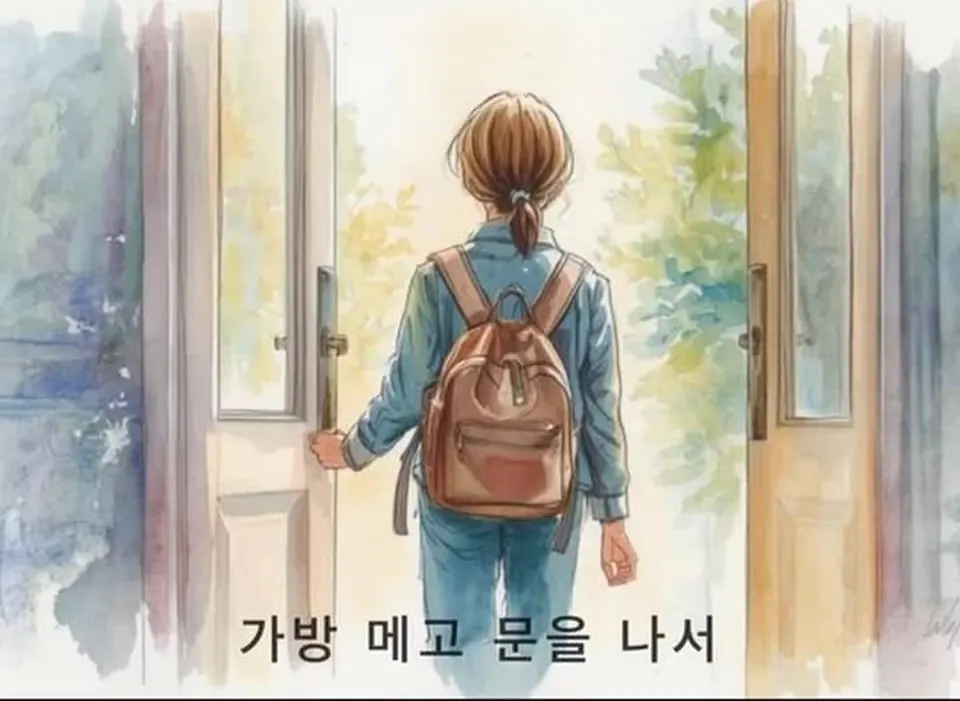
리릭 비디오 플레이어 · 학생 창작곡 장면 · 2026
학생이 지은 노랫말을 초 단위로 음원에 맞추고 가사 장면마다 이미지를 붙여 재생한다. 설치·로그인 없이 열려 복도와 급식실에 QR로 걸어 둘 수 있다.
이 수업에 쓰세요 · 창작 단원 결과 발표 · 캠페인송
바로가기 ↗Structure · 뮤지컬리너스
학급 공통 뼈대로는 6막 6넘버의 예시 대본 『찬란하게 빛나는 우리들의 중3 에세이』를 쓴다. 수행평가가 아니어서 입장과 제출을 늘 열어 두었고, 교사는 '학급·공지' 화면에 공지만 올리면 된다.
모둠 하나 · 모둠원 5명각자 한 칸
↓ 자동으로 합치기
↓ 여섯 모둠이 막 순서대로 잇기
↓
Start · 이렇게 시작해 보세요
건반을 누르면 그 음이 바로 악보에 적힌다면? AI가 붙인 편곡을 학생이 한 음씩 비교하고 고칠 수 있다면? 2부 시연 「AI 창작의 주도권을 학생에게」를 여덟 화면으로 따라가 봅니다. 아래 화면은 개발 중인 시안입니다.

건반을 꽂으면, 교실이 한 악보에 모인다.
MIDI 건반을 USB로 꽂으면 자동으로 연결된다. 곡 제목과 모둠원 역할(작사·작곡·편곡·기록·발표)을 정하고, 모둠원은 태블릿으로 QR을 찍어 같은 악보에 들어온다.
네 줄 노랫말이 여덟 마디의 뼈대가 된다.
노랫말을 한 줄씩 입력하면 글자가 음절로 나뉜다. 글자 하나가 음표 하나, 한 줄이 두 마디가 된다.
누르는 순간 기록된다.
4/4, ♩=92, 다장조처럼 연주 조건을 정한다. 예비박 네 번 뒤에 연주하면 누른 음의 높이와 길이가 막대로 그려지고, 음 이름이 바로 보인다.
흔들린 박이 음표로 자리 잡는다.
손으로 친 연주는 박보다 조금씩 빠르거나 늦다. 맞춤 단위를 고르고 '박 맞춤'을 누르면 막대가 박에 맞게 정리되고 음표가 된다.
글자가 음표 아래에 앉는다.
2단계에서 나눈 음절이 음표 아래에 한 글자씩 붙는다. 어긋난 글자는 끌어서 옮기고, 줄마다 글자 수와 음표 수가 맞는지 바로 확인한다.
반주는 AI가 붙이고, 선율은 학생이 지킨다.
장르·분위기·밴드 악기를 고른다. 학생의 선율과 가사는 그대로 두고, AI가 만든 편곡 세 가지 가운데 하나를 골라 파트별 음표로 받아온다.
AI가 바꾼 음은 주황색. 고를지 말지는 학생이 정한다.
내 선율과 AI의 노래 파트를 겹쳐 본다. 두 리듬을 들어 보고 모둠이 고르며, 고친 이유를 한 줄로 남기면 과정중심평가 기록이 된다.
밴드 총보 한 장. 그리고 다시 처음부터.
노래와 밴드 파트가 함께 적힌 총보가 된다. 악보 파일(MusicXML)·PDF·MIDI로 내보내고, 고친 악보로 AI 새 버전을 만들어 처음 버전과 비교한다.
마지막 결정은 학생이 한다.
STEP 07 비교·수정

Start · 이렇게 시작해 보세요
여덟 단계를 거쳐 완성한 9단 밴드 총보입니다. 악보를 누르면 크게 볼 수 있고, 아래 파트 이름을 누르면 그 파트가 맡은 일이 보입니다.
Lyrics
가방 메고 문을 나서
웃음도 눈물도 모두 담아서
내 꿈은 조금 더 가까워져
조금씩 더 커져 가는 나
Chords · 반 마디 단위
F G │ Em AmC G/B │ Am Em │ F C/E │ Dm7 GF G │ Em Am │ Dm7 G │ CParts · 파트를 눌러 보세요
노래 — 학생이 지은 선율과 가사. 음역은 레4~미5로, 중학생이 부르기 편한 범위다.
노래는 영상이 되고, 복도의 QR이 되고, 무대가 되었습니다. 학생이 지은 노래 다섯 곡을 모았습니다. 영상이 있는 작품은 누르면 그 자리에서 재생됩니다.
중0 · 모방시 창작 · 2026 · 리릭 비디오
01김영랑의 문장 틀에 학생의 말을 갈아 끼웠다
김영랑 「돌담에 속삭이는 햇발같이」의 문장 틀만 빌려 학생이 자기 말로 모방시를 지었다. 원시(1절)와 모방시(2절)가 한 화면에서 이어 재생되는 리릭 비디오로 완성했다.
중0 · 통일교육 계기교육 · 2026 · 창작곡 영상 2종
02영상을 보던 시간이 노래를 짓는 시간이 되었다
영상을 보고 끝나던 통일교육 계기교육 시간을 학생이 노랫말을 짓고 노래로 완성하는 창작 시간으로 바꾸었다. 수채화와 기차 두 가지 분위기의 영상으로 완성했다.
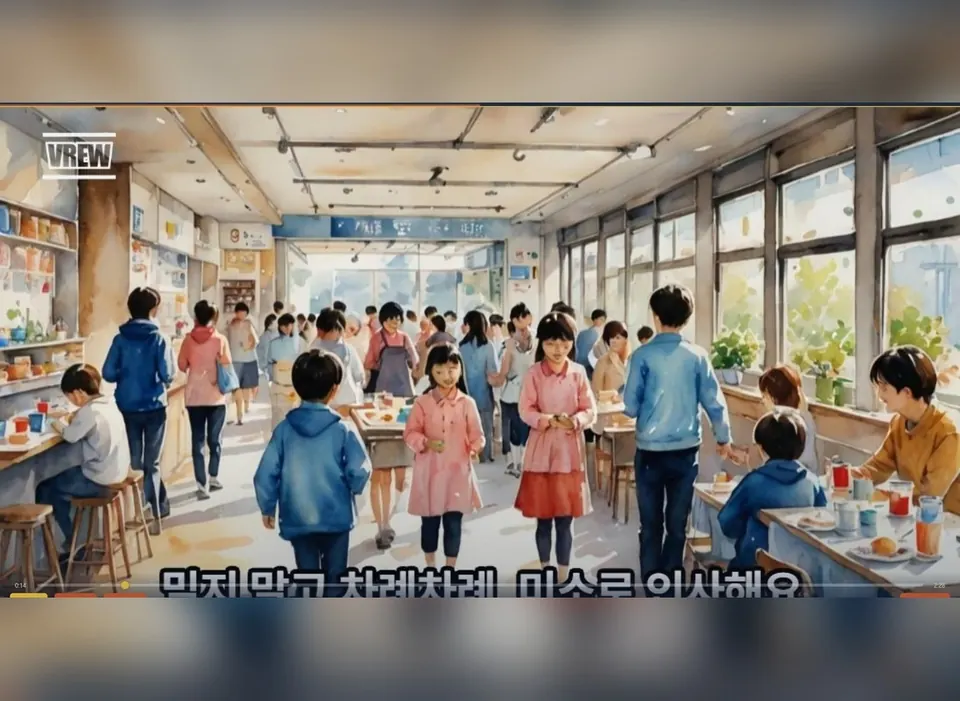
중0 · 급식문화 캠페인 · 2026 · 리릭 비디오
039일 만에 급식실 벽에 걸린 캠페인송
급식 질서를 주제로 묻고·찾고·빚고·나누는 과정을 거쳐 9일 만에 완성했다. 가사 줄마다 장면 이미지를 붙인 리릭 비디오를 QR로 급식실과 복도에 게시했다.
영상 주소 0
중0 · ME 프로젝트 · 2026 · 리릭 비디오
04나를 담은 노래
1학기 ME 프로젝트에서 학생이 쓴 가사로 AI 음원을 만들고, 가사 장면마다 이미지를 엮어 설치·로그인 없이 재생되는 리릭 비디오로 완성했다.
리릭 비디오 열기 ↗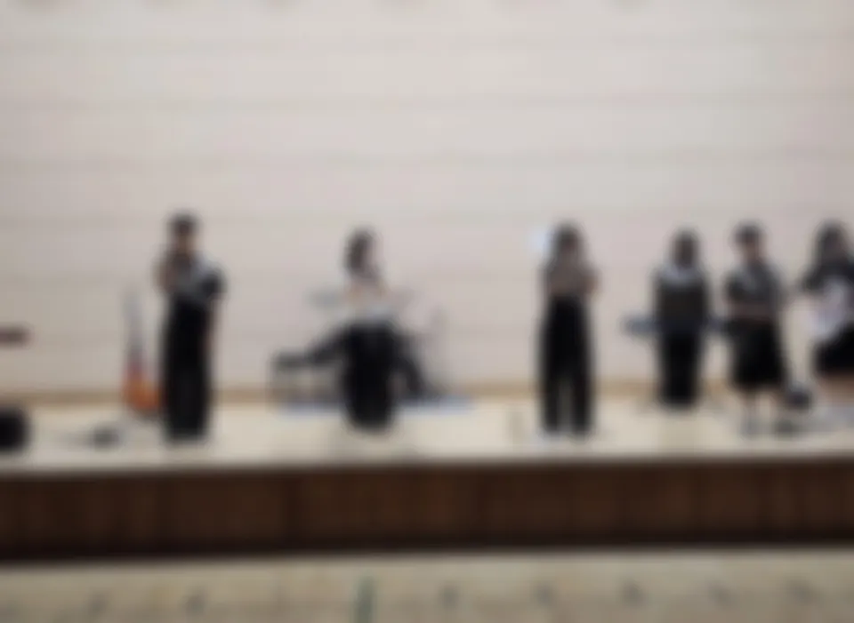
중0 · 점심시간 소축제 · 2026 · 밴드 공연·댄스
05교실에서 만든 노래가 무대에 올랐다
교실에서 만든 노래가 점심시간 소축제 무대로 이어졌다. 학생 밴드 공연과 창작곡 댄스를 전교생 앞에서 선보였다. 사진은 얼굴이 드러나지 않도록 흐리게 처리했다.
무대 영상 주소 0
How to Read 캡션은 학년 · 프로젝트 · 연도 · 형식 순서입니다. 학생 이름 대신 학년과 프로젝트로 적었고, 0은 아직 확인하지 못한 값입니다.
실시간 악보 플랫폼을 기준으로 준비물과 네 차시 흐름, 자주 묻는 질문을 정리했습니다. 이 장에서만 실제 도구 이름을 괄호로 함께 적었습니다.
모둠당 1대 또는 교사용 1대 · MIDI 건반 연결용
모둠당 1대 · USB 케이블·젠더 · 없으면 화면 건반
1인 1대 · QR로 같은 악보에 접속
학생 모두 · 로그인이 필요한 플랫폼만
모둠 역할 정하기, 네 줄 노랫말 쓰기
01 · 02건반으로 선율 연주, 박 맞춤, 가사 붙이기
03 · 04 · 05편곡 고르기, 내 선율과 비교해 고치기
06 · 07밴드 총보 완성, 고친 버전 발표
08아니요. 교육청 학생 계정으로 로그인하거나 주소만으로 열립니다.
작곡 방식을 '마우스'로 고르고 화면 건반으로 입력합니다.
건반 연결은 노트북 크롬을 기준으로 합니다. 태블릿은 QR로 같은 악보에 함께 들어옵니다.
AI 음악 생성 서비스(수노)로 만든 음원을 파트별 음표로 받아옵니다.
악보 파일(MusicXML)로 내보내 악보 편집 프로그램(뮤즈스코어)에서 엽니다.
7단계의 '고친 이유 한 줄'이 그대로 과정중심평가 기록이 됩니다.
Check · 눌러서 표시
0 / 5
2027학년도부터 서·논술형 평가가 넓어집니다. 정기시험이 없는 음악은 수행평가 안에서 서·논술형을 설계해야 하지요. ‘느낀 점을 쓰시오’를 넘어, 교실에서 들은 소리를 근거로 분석하고 따지고 제안하게 하는 「귀명창」 수업–평가 모형과 학년별 문항 세트를 담았습니다.
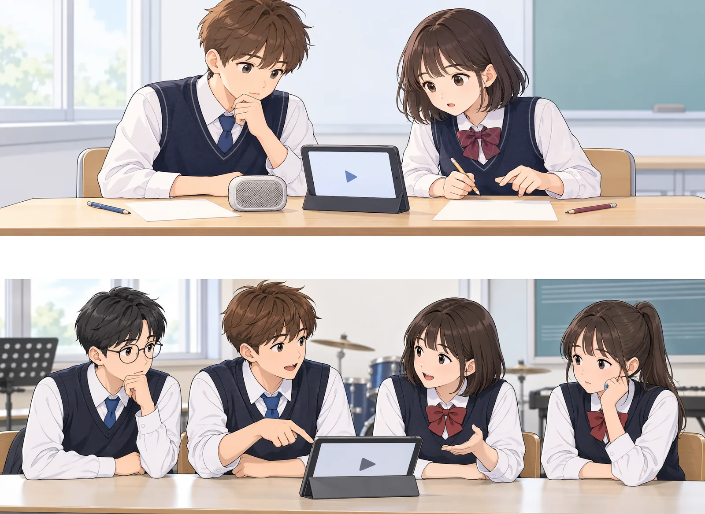
2022 개정 음악과 교육과정은 평가 방법으로 실음 지필 평가와 서·논술형 평가를 제시하고, 중학교 감상에서 구별·분석·비교·평가 등의 사고 과정을 강조한다.
교육부, 2022전남광주교육청은 2027학년도부터 중학교 1학년 2학기 국어·수학·영어·사회·과학 정기시험에서 선택형 문항을 없애고, 중2·3으로 차례로 넓힐 계획이다.
2026. 9. 보도2027년 3월 문을 여는 교육과정개발평가원이 예시 문항과 채점 기준 보급을 맡고, AI 평가지원 시스템은 채점·피드백을 보조하되 최종 판단은 교사에게 둔다.
2026. 7. 보도정기시험 과목이 아닌 음악은 수행평가 안에서 서·논술형을 설계해야 한다. 중1은 1학기 자유학기에 서·논술형을 연습해 볼 수 있어, 이 시기에 쓸 예술 교과 문항이 필요하다.
K-교육특별시 준비위원회, 2026. 7.Wall 01
“곡을 듣고 느낀 점을 쓰시오.” 정답도 근거도 없어 학생은 막연하게 쓰고, 교사는 무엇을 채점할지 흐리다.
Fix들은 소리를 근거 단위로 쓰게 하는 문항 — 소리 증거: 요소–들린 순간–효과
Wall 02
같은 답안에 교사마다 점수가 다르다. 서·논술형 확대에 대한 현장의 가장 큰 걱정이 채점의 신뢰도이다.
Fix근거 단위 분석적 루브릭, 상·중·하 앵커 답안, 2인 교차 채점
Wall 03
집에서 쓰는 감상문은 AI가 몇 초 만에 대신 써 준다. 고교생 96.5%가 수행평가 준비에 생성형 AI를 쓴다는 조사도 있다(2025. 10. 보도).
Fix교실에서 그 자리에서 들은 실음만 근거가 되는 수업 중 서·논술형
듣는 귀가 곧
필요한 것은 ‘글쓰기 시험’이 아니라, 수업과 평가를 한 줄로 잇는 문항과 채점 기준이다
생각하는 힘이 되도록
귀명창은 판소리에서 소리를 알아듣는 귀가 명창 못지않게 밝은 청중을 이르는 말이다. 학생을 잘 듣고 근거를 들어 말하는 ‘교실의 귀명창’으로 기르는 것을 목표로, 사고의 위계를 귀(분석) → 명(비판) → 창(창의)의 세 단계로 설계했다. 사고력 위계는 개정 블룸 분류, 논증 구조는 툴민의 주장–근거–반론, 창의성 채점은 유창성·융통성·정교성을 토대로 했다.
Listen · 분석적 사고
같은 선율의 두 편곡을 듣고 빠르기·셈여림·음색·리듬·짜임새·구성의 차이를 찾아 ‘들린 순간’과 함께 기록한다.
도구 · 소리 증거 카드(요소–들린 순간–효과), 음악 요소 낱말 은행
문항 1 서술형 · K-DOT 3Argue · 비판적 사고
쟁점에 입장을 정하고 소리 증거와 자료로 근거 2개를 세운 뒤, 예상 반론을 공정하게 쓰고 재반박한다.
도구 · 주장–근거–반론 3층 카드, 동료 비평 한 줄
문항 2 논술형 · K-DOT 4Create · 창의적 사고
장면의 의도에 맞는 편곡 방향을 서로 다른 갈래로 두 가지 이상 설계하고, 하나를 골라 음악 요소로 이유를 쓴다.
도구 · 편곡 설계도, AI 두 버전 비교표
문항 3 서술형 · K-DOT 5Loop · 성장 순환
매 차시 ‘3분 쓰기’ → 루브릭 한 줄 짝 피드백 → 고쳐쓰기. 최종 평가 전에 같은 형식을 두 번 연습해 평가가 ‘처음 보는 시험’이 되지 않게 한다.
K-DOT · 한국형 사고의 깊이귀명창과 중2 세트는 3~5수준, 중3 세트는 2~3수준
K-DOT 5수준 · 서울시교육청 AI 서·논술형 평가지원 시스템의 문항 개발 기준(2026. 11. 보도) · 전남광주교육청은 서울·전북교육청과 AI 서·논술형 평가 시스템 공동 운영 협약을 맺었다(2026. 9.)
Unit · 감상 중심, 창작 연계
음악을 듣고 근거로 말하기
같은 선율·가사가 빠르기·음색·시대 양식에 따라 전혀 다르게 들리는 비교 감상은 ‘들은 것을 근거로 판단하는’ 사고를 연습하기에 가장 알맞다. 악기 연주 실력과 상관없이 모든 학생이 같은 출발선에서 쓸 수 있다.
| 성취기준(2022 개정 중학교 음악) | 사고력 | 수업 속 모습 | 문항 |
|---|---|---|---|
| [9음02-01]음악을 듣고 다양한 음악 요소에 집중하여 분석한다. | 분석(귀) | 두 편곡의 요소 차이를 소리 증거로 기록 | 문항 1 |
| [9음02-02]다양한 시대와 문화권의 음악을 듣고 음악적 특징과 음악의 구성을 파악한다. | 분석·비교(귀) | 한 편의 시를 여러 시대 양식으로 편곡한 음원 비교 | 문항 1 |
| [9음02-04]생활 속에서 음악을 들으며 다양한 감성과 가치를 인식하고 존중한다. | 비판(명) | 쟁점에 입장을 세우고 다른 관점을 존중하며 반박 | 문항 2 |
| [9음03-01]음악적 의도나 아이디어를 여러 매체나 방법에 적용하여 자기 주도적으로 창작한다. | 창의(창) | 장면 의도에 맞는 편곡 방향을 여러 갈래로 설계 | 문항 3 |
관련 교과 역량 · 감성·창의성·자기주도성·공동체·소통 역량(2022 개정 음악과 교육과정)
제시 음원
같은 선율로 만든 두 편곡 A(느린 피아노 편곡)와 B(빠른 밴드 편곡)를 30초씩 두 번 듣는다.
A와 B의 분위기 차이를 한 문장으로 쓰고, 그 차이를 만든 음악 요소 두 가지를 ‘들린 순간’과 함께 설명하시오.
〈조건〉 ① 음악 요소 용어를 2개 이상 쓸 것 ② “후렴에서”, “시작 부분에서”처럼 들린 순간을 밝힐 것
예시 답안
A는 차분하고 쓸쓸하지만 B는 힘차고 들뜬 느낌이다. 첫째, 빠르기가 다르다. A는 끝까지 느린 빠르기를 유지하지만 B는 시작부터 빠른 박으로 달린다. 둘째, 음색이 다르다. A는 피아노 한 대의 부드러운 소리인데, B는 후렴에서 드럼과 전기 기타가 더해져 소리가 꽉 차고 강해진다.
| 채점 요소(배점) | 상 | 중 | 하 |
|---|---|---|---|
| 분위기 비교(2) | 두 곡의 분위기를 대비하여 진술(2) | 한 곡만 쓰거나 모호함(1) | 없음(0) |
| 음악 요소 용어(4) | 정확한 요소 용어 2개(각 2) | 용어가 부정확하거나 1개(1~2) | 없음(0) |
| 소리 증거(4) | 들린 순간과 구체적 차이 2개(각 2) | “느낌이 다르다” 수준의 일반 진술(1~2) | 없음(0) |
[자료 1] 교내 음악회 안내: “출품작 장르와 제작 방법은 제한하지 않습니다.”
[자료 2] 학생 ㉠: “가사는 내가 쓰고 AI 결과를 여러 번 고쳤으니 내 작품이야.”
[자료 3] 학생 ㉡: “몇 번 눌러 만든 곡과 몇 주 연습한 연주를 같은 기준으로 심사하는 건 불공정해.”
교내 음악회에 ‘AI와 함께 만든 노래’를 출품할 수 있게 해야 하는가? 자신의 입장을 밝히고 근거 2가지(그중 하나는 수업에서 들은 음악의 소리 증거)를 들어 논술하시오. 예상 반론 1가지와 재반박을 포함하시오. (300~400자)
| 채점 요소(배점) | 상 | 중 | 하 |
|---|---|---|---|
| 주장의 명료성(2) | 입장이 처음부터 끝까지 분명하고 일관됨(2) | 입장이 흔들리거나 모호함(1) | 입장 없음(0) |
| 근거의 타당성(4) | 근거 2개가 주장과 직접 이어짐(4) | 근거 1개이거나 연결이 약함(2) | 근거 없음(0) |
| 음악적 증거(3) | 들은 음악의 요소·장면을 근거로 활용(3) | 음악을 막연히 언급(1) | 없음(0) |
| 반론과 재반박(4) | 반론을 공정하게 쓰고 재반박함(4) | 반론만 씀(2) | 없음(0) |
| 구성과 분량(2) | 처음–가운데–끝 구성, 분량 충족(2) | 일부 미흡(1) | 미흡(0) |
찬성·반대 어느 입장이든 같은 기준으로 채점한다. 평가 대상은 입장이 아니라 근거의 질이다.
[상황] 우리 반 학년 말 ‘1년 돌아보기’ 영상의 마지막 30초에 같은 선율을 편곡해 넣으려 한다.
① 장면에 어울리는 편곡 아이디어를 서로 다른 방향으로 두 가지 쓰되, 각각 음악 요소를 2개 이상 밝히시오. ② 그중 하나를 골라 장면의 의도와 이어 선택 이유를 쓰시오.
| 채점 요소(배점) | 상 | 중 | 하 |
|---|---|---|---|
| 아이디어의 다양성(3) | 방향이 뚜렷이 다른 두 아이디어(3) | 두 아이디어가 비슷함(2) | 한 가지만 씀(0~1) |
| 요소 적용의 구체성(3) | 아이디어마다 요소 2개 이상을 구체적으로(3) | 요소가 1개이거나 막연함(1~2) | 없음(0) |
| 의도–선택의 연결(4) | 장면 의도와 요소 선택을 논리적으로 연결(4) | 연결이 일부만 드러남(2) | 연결 없음(0) |
시범 적용 답안에서 상·중·하 예시 답안을 골라 채점 안내서에 싣고, 교과협의회에서 공동 채점 연습을 한다.
두 교사의 점수 차가 2점 이상인 답안은 협의해 확정하고, 그 사례를 안내서에 덧붙인다.
실음은 교실에서 같은 조건으로 두 번 들려주고, 청각적 지원이 필요한 학생에게는 그래픽 악보와 자막 자료를 제공한다.
채점 요소별 한 줄 피드백을 돌려주고 고쳐쓰기 기회를 주어 성장 과정을 기록한다. 루브릭은 근거 단위로 짜여 있어 AI 평가지원 시스템의 피드백 보조에도 쓸 수 있으나, 점수는 교사가 확정한다.
급간형 문항은 답안 전체가 충족한 가장 높은 급간 하나를 준다. 감점은 만점과의 차이일 뿐, 누락 항목마다 따로 빼서 합산하지 않는다.
같은 뜻의 표현과 타당한 다른 방법은 인정하고, 문장 길이나 표현 방식만으로 감점하지 않는다. 경계 답안은 채점자 협의로 정한 뒤 같은 유형에 똑같이 적용한다.
같은 선율 두 편곡 비교, 음악 요소 낱말 은행 만들기, 소리 증거 카드 쓰기 연습
3분 쓰기(진단)한 편의 시를 여러 시대 양식으로 편곡한 음원을 비교 감상하고 특징 분석표 작성 (02장 「진달래꽃」 비교 감상)
문항 1 형식 연습 · 짝 피드백쟁점 토의 “AI와 함께 만든 노래도 내 작품인가?”, 주장–근거–반론 3층 카드, 동료 비평
논술 개요 쓰기같은 가사로 만든 두 버전 비교·분석, 장면에 맞는 편곡 설계
문항 1·3 서술형 평가본시논술형 평가, 루브릭 피드백 후 고쳐쓰기 계획, 단원 성찰
문항 2 논술형 · 자기평가0′45′
같은 가사의 두 버전을 10초씩 듣고 “졸업식에는 어느 쪽?” 손들기 → 학습 목표 확인 → 오늘의 루브릭 미리 보기
평가 기준을 먼저 공개두 버전을 30초씩 두 번 듣고 소리 증거 카드(요소–들린 순간–효과) 작성 → 모둠에서 카드 비교 → 낱말 은행으로 용어 점검
관찰: 요소 용어 사용장면 카드(학년 말 영상 마지막 30초) 제시 → 편곡 아이디어 두 갈래 설계 → 짝과 ‘좋은 점 1·질문 1’ 피드백
동료 피드백평가 문항지 개별 작성: 문항 1(8분), 문항 3(7분). 실음 1회 추가 재생, 태블릿·검색·AI 사용 없음
서술형 평가(분석적 루브릭)루브릭으로 자기 점검, 다음 차시 논술 쟁점 예고
자기평가귀소리 증거 카드 학생용 활동지 발췌
| 요소 | 들린 순간 | A 버전 | B 버전 | 느낌·효과 |
|---|---|---|---|---|
| 빠르기 | 시작 부분 | |||
| 음색 | 후렴 | |||
낱말 은행 · 빠르기 · 셈여림 · 음색 · 리듬 · 화음 · 짜임새 · 구성(전주·절·후렴)
창편곡 설계도 학생용 활동지 발췌
음악 서술형 평가 문항지 1학년 ___반 ___번 이름 ________ · 총 20점 / 15분
1. (10점) 두 버전의 분위기 차이를 한 문장으로 쓰고, 그 차이를 만든 음악 요소 두 가지를 들린 순간과 함께 설명하시오.
〈조건〉 음악 요소 용어 2개 이상, 들린 순간 밝히기
3. (10점) 학년 말 영상의 마지막 30초에 넣을 편곡 아이디어를 서로 다른 방향으로 두 가지 쓰고(요소 2개 이상씩), 하나를 골라 장면의 의도와 이어 이유를 쓰시오.
평가 문항지 발췌 · 문항 2(논술형)는 5차시에 따로 본다
귀명창과 같은 틀로 중2·중3 세트를 만들었습니다. 표에서 세트를 고르거나 아래 카드를 펼치면 문항 정보표부터 예시 답안까지 그대로 볼 수 있습니다.
| 세트 | 학년 | 핵심 내용 | K-DOT | 배점·시간 |
|---|---|---|---|---|
| 「귀명창」 | 중1 | 같은 노래, 다른 소리 — 편곡 비교, ‘AI와 함께 만든 노래’ 쟁점 논술, 장면에 맞는 편곡 설계 | 3 · 4 · 5 | 35점 · 2차시 |
| ① 음감과 이조 | 중2 | 절대·상대음감 구분, 이조할 때 바뀌는 것과 그대로인 것, 청음·합창 공동 연습 설계 | 3 · 4 · 5 | 30점 · 40분 |
| ② 성부와 형식 | 중2 | 호모포니·폴리포니, 론도(A-B-A-C-A)의 리프레인·에피소드, 감상→연주→녹음 비교 활동 설계 | 3 · 4 · 5 | 30점 · 40분 |
| ③ 한국음악·국악 | 중2 | 기보법·악서·제례악의 역할, 시나위의 같은 흐름과 다른 장식, 현장 전승 학습 설계 | 3 · 4 · 5 | 30점 · 40분 |
| 캠페인송 | 중3 | 송폼과 후렴 반복의 기능, 음악 요소와 메시지 전달, AI 음원 두 후보와 또래 반응 비교 | 2 · 2 · 3 | 10점 |
한 세트 안에서 K-DOT 수준을 차례로 올린다. 중2 세트는 3→4→5수준, 배점도 8→10→12점이다. 앞 문항의 분석이 뒤 문항의 판단과 설계의 근거가 된다.
“절대음감은 언제나 더 좋다”, “A가 세 번 나오니 A-A-A 형식이다”처럼 학생이 자주 하는 오개념을 인물의 주장으로 내놓고 자료로 판단하게 한다.
객관식 선택지를 정답으로 옮기지 않고 개념 설명과 가상 수업 장면으로 다시 쓰며, 자료마다 출처와 재구성 여부를 밝힌다.
중3 세트는 AI 음원 두 후보와 또래 10명의 기억 결과를 비교해 고르고, 표본의 한계와 AI 결과를 학생이 검토·수정해야 하는 이유까지 쓰게 한다.
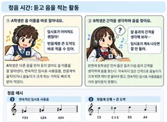
음감과 이조중2 · 문항 1~3 · 30점 · 40분K-DOT 3 · 4 · 5[1~3] 다음 자료를 읽고 물음에 답하시오. 자료의 근거를 활용하여 자신의 생각을 서술하시오. (총 30점, 40분)
자료 1 · 문자 텍스트
절대음감은 다른 음을 먼저 듣지 않아도, 들리는 음이 ‘도, 레, 미’ 중 어떤 음인지 알아내는 능력이다.
상대음감은 먼저 들은 음을 기준으로, 다음 음이 얼마나 높거나 낮은지 알아내는 능력이다. 두 음 사이의 높이 차이를 ‘음정’이라고 한다. 두 능력을 함께 사용할 수도 있고, 연습한 경험에 따라 잘하는 정도가 달라질 수 있다.
노래의 모든 음을 같은 간격만큼 높이거나 낮추는 것을 ‘이조’라고 한다. 이조하면 각 음의 높이는 달라지지만, 음과 음 사이의 간격은 그대로이다.
출처: 출제자가 문항 이해를 위해 구성
자료 2 · 문자 텍스트
[청음 시간: 듣고 음을 적는 활동]
A학생은 다른 음을 먼저 듣지 않아도 음 이름을 잘 알아낸다. 연속적인 임시표 사용음들 그리고 반음계씩 움직이거나 음높이가 크게 뛰는 가락도 빠르게 받아 적었다.
반면에 B학생은 먼저 들은 음과 다음 음의 간격을 생각하며 음을 찾는다. 익숙하지 않은 간격으로 음높이가 크게 뛰면 여러 번 들어야 했고 연속적인 임시표 사용음들은 거의 알아듣지 못했다.
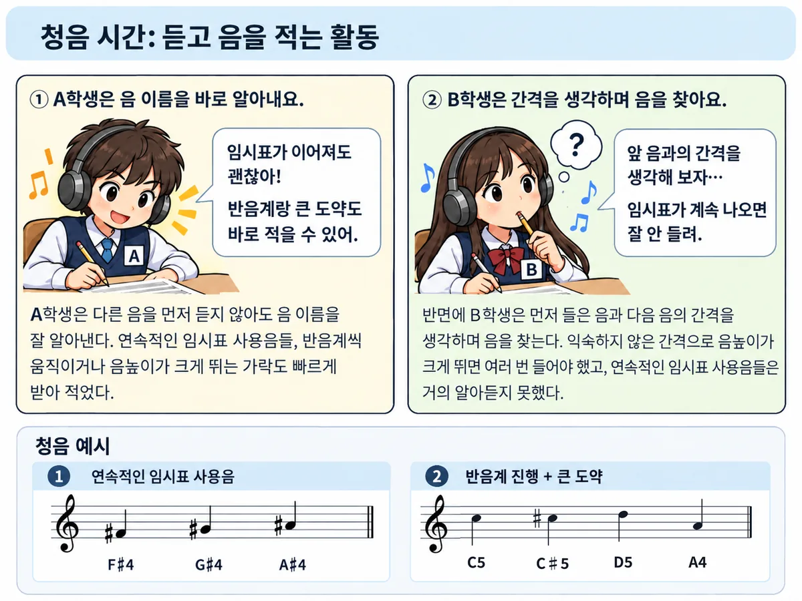
[합창 시간: 노래의 높이를 바꾸어 부르는 활동]
교사는 학생들이 편하게 부를 수 있도록 노래 전체를 장2도 낮추었다. 장2도는 온음 한 개의 간격이다.
B학생은 바뀐 노래의 첫음을 듣고, 음 사이의 간격을 유지하며 노래했다. A학생은 악보에 적힌 원래 음 이름과 들리는 음이 달라 처음에는 헷갈렸다.
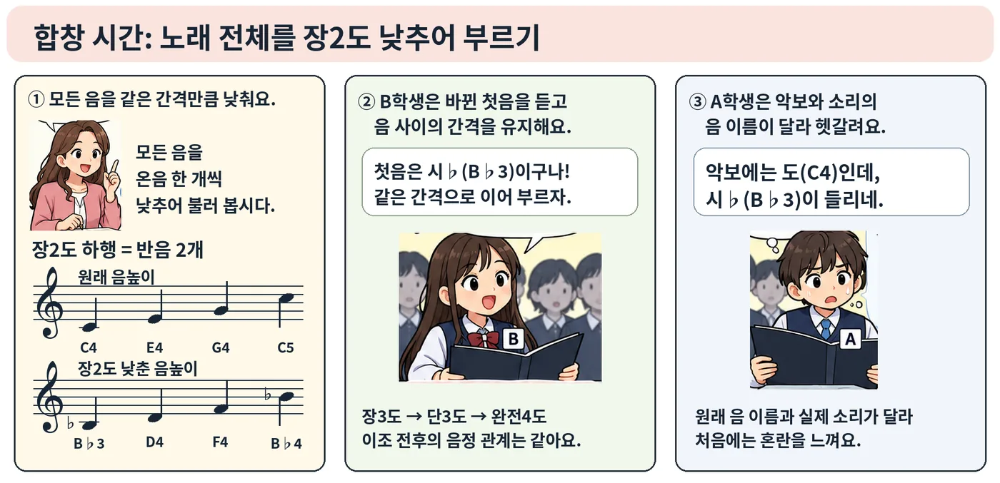
※ A학생과 B학생은 설명을 위해 만든 학생이다. 같은 음감이 있어도 사람마다 잘하는 점과 어려운 점은 다를 수 있다.
출처: 수업 사례를 재구성
자료 3 · 이미지
이조 전후 선율 비교
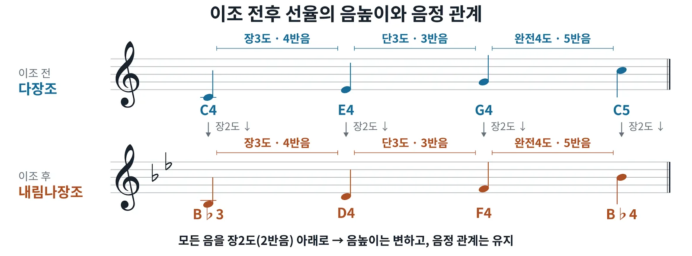
출처: 출제자가 제작한 이조 전후 선율 비교 그림
문항 1K-DOT 3 · 해석·관계 분석8점
자료 1과 자료 2를 읽고, A학생과 B학생 중 누가 절대음감이고 누가 상대음감인지 밝히시오. 그렇게 판단한 근거를 자료 2에서 찾아 설명하시오. 청음 시간과 합창 시간에 두 학생이 보인 모습을 각 음감의 특징과 연결하여 쓰시오.
문항 2K-DOT 4 · 판단·정당화10점
한 학생이 “절대음감은 상대음감보다 언제나 더 좋다. 따라서 합창을 잘하려면 절대음감만 기르면 된다.”라고 말했다. 이 말에 동의하는지 자신의 생각을 쓰시오. 자료 3에서 노래의 높이를 바꾸었을 때 달라지는 것과 그대로인 것을 설명하고, 자료 1~3에서 찾은 근거로 자신의 생각을 뒷받침하시오.
문항 3K-DOT 5 · 문제 해결·종합12점
A학생과 B학생이 청음과 합창을 함께 연습할 계획을 세우시오. 청음에서는 반음과 큰 음높이 차이가 있는 가락을 연습하고, 합창에서는 노래 전체를 장2도 낮추어 부른다고 가정하시오. 아래 조건을 포함하여 각 활동의 이유를 설명하시오.
| 문항 | 급간 | 수행 특성 |
|---|---|---|
| 문항 1음 인식 방식과 두 수업의 관계 | 8 | A학생은 절대음감, B학생은 상대음감으로 옳게 구분하고, 기준음 없이 음 이름을 알아내는 점과 음 사이의 간격을 이용하는 점을 청음·합창 사례에 연결하여 설명함. |
| 6 | 두 학생의 음감을 옳게 구분하고 각 인식 방식의 근거를 설명했으나, 청음·합창 사례와의 연결 중 일부가 빠짐. | |
| 4 | 두 학생을 옳게 구분했으나 두 인식 방식의 근거가 부족함. 또는 한 학생의 음감과 근거만 옳게 설명함. | |
| 0 | 무응답 또는 음감 구분과 근거 설명이 4점 수준에 미치지 못함. | |
| 문항 2이조 원리와 근거에 따른 판단 | 10 | 자료 3의 구체적인 음 예를 들어 음높이 변화와 음정 관계 유지를 모두 옳게 설명함. 청음·합창의 요구 차이와 두 능력의 병존 가능성을 자료의 근거로 연결하여 우열 주장을 비판함. |
| 8 | 이조의 두 원리를 옳게 설명하고 자료의 근거로 우열 주장을 판단했으나, 구체적인 음 예·활동별 비교·병존 가능성 중 일부가 부족함. | |
| 5 | 이조 원리나 우열 판단의 근거 중 일부만 옳게 제시하여 8점 수준에 미치지 못함. | |
| 0 | 무응답 또는 이조 원리와 판단 근거에 타당한 내용이 없음. | |
| 문항 3보완 활동과 협력·점검 계획 | 12 | A학생과 B학생의 어려움별 보완 활동과 이유, 협력 순서, 연습 전후 청음·녹음 비교 방법을 모두 구체적으로 제시함. |
| 9 | 두 학생에 맞는 보완 활동과 협력 순서를 제시했으나, 연습 이유나 전후 확인 방법이 일부 부족함. | |
| 6 | 보완 활동 또는 협력·점검 중 한 영역만 구체적으로 제시하여 9점 수준에 미치지 못함. | |
| 0 | 무응답 또는 타당하고 구체적인 보완 활동이나 협력·점검 계획을 제시하지 못함. |
공통: 가장 높은 충족 급간을 적용하며, 같은 의미의 표현과 타당한 다른 활동도 인정함.
문항 1 · 8점 예시
A학생은 절대음감이다. 다른 음을 먼저 듣지 않아도 음 이름을 알아내어 빠르게 적었기 때문이다. 합창에서는 악보의 음 이름과 들리는 음이 달라 처음에 헷갈렸다.
B학생은 상대음감이다. 먼저 들은 음을 기준으로 다음 음과의 간격을 생각하며 음을 찾기 때문이다. 합창에서도 바뀐 첫음을 듣고 같은 음 간격으로 노래했다.
A학생은 절대음감, B학생은 상대음감이다. 청음에서 A학생은 기준음 없이 음 이름을 알아내고, B학생은 앞 음과의 간격으로 음을 찾기 때문이다.
A학생은 절대음감이고 B학생은 상대음감이다.
음감만 구분하고 판단 근거는 제시하지 않음.
A학생은 상대음감이고 B학생은 절대음감이다.
근거 없는 오답 또는 무응답
문항 2 · 10점 예시
C–E–G–C를 장2도 낮추면 B♭–D–F–B♭이다. 절대 음높이는 바뀌지만 장3도–단3도–완전4도의 관계는 유지된다.
청음에서는 A학생의 음 이름 인식이, 이조 합창에서는 B학생의 음정 관계 인식이 도움이 되었다. 두 능력을 함께 쓸 수도 있으므로 절대음감이 언제나 우수하다는 주장에 동의하지 않는다.
장2도 낮추면 모든 음높이는 달라져도 음 사이의 간격은 같다. B학생이 새 첫음을 듣고 합창한 것처럼 상대음감도 도움이 되므로, 절대음감만 기르면 된다는 말에 동의하지 않는다.
이조하면 음높이는 바뀌지만 음 사이의 간격은 같다.
우열 주장에 대한 판단과 근거는 제시하지 않음.
이조하면 음 사이의 간격도 모두 바뀐다. 절대음감이 무조건 더 좋다.
오답 또는 무응답
문항 3 · 12점 예시
A학생은 새 첫음과 장2도 낮춘 악보를 연결해 부르며 음 이름의 혼란을 줄인다. B학생은 반음과 큰 도약을 짧게 나누어 앞뒤 음정을 듣고 부르며 낯선 간격을 익힌다.
기준음 듣기→구간별로 번갈아 부르기→함께 부르기 순으로 연습한다. 연습 전후 같은 난도의 청음 정답 수와 같은 합창 구간의 녹음을 비교해 음정이 나아졌는지 확인한다.
A학생은 새 첫음과 낮춘 악보를 익혀 혼란을 줄이고, B학생은 반음·도약 음정을 반복해 간격을 익힌다. 이후 기준음 듣기, 번갈아 부르기, 함께 부르기 순으로 연습한다.
전후 확인 방법 누락
A학생은 새 첫음과 이조 악보를 익혀 혼란을 줄이고, B학생은 낯선 도약 음정을 반복한다.
협력 순서와 확인 방법 누락
두 사람 모두 계속 열심히 연습하면 된다.
구체적인 활동·이유·확인 방법 없음 또는 무응답
문항별 4급간과 총점 30점은 유지한다. 감점은 만점과 부여 점수의 차이이며, 누락 항목마다 점수를 따로 빼서 합산하지 않는다. 답안 전체가 충족한 가장 높은 급간을 적용한다. 같은 뜻의 표현과 타당한 다른 연습 방법도 인정하고, 문장 길이나 표현 방식만으로 감점하지 않는다. 경계 답안은 인정한 내용과 부족한 내용을 함께 적고, 기존 기준으로 판단하기 어려우면 채점자 간 협의 후 같은 유형에 동일하게 적용한다.
두 학생을 옳게 구분하고 청음에서의 인식 방식까지 설명했지만 합창 사례를 연결하지 않았다면 6점에 해당한다. 반면 “A학생은 절대음감이고 B학생은 상대음감이다”처럼 음감 이름만 옳게 제시하고 판단 근거를 쓰지 않았다면 4점에 해당한다.
음높이는 달라지지만 음정 관계는 유지된다고 설명하고, B학생의 합창 사례를 근거로 상대음감도 도움이 된다고 판단한 답안은 8점에 해당한다. 반면 이조의 두 원리만 설명하고 우열 주장에 대한 판단과 근거를 제시하지 않은 답안은 5점에 해당한다.
두 학생에게 필요한 연습과 그 이유를 제시하고 함께 연습할 순서까지 작성했지만 연습 전후 확인 방법을 빠뜨린 답안은 9점에 해당한다. 두 학생의 보완 활동만 제시하고 협력 순서와 확인 방법을 모두 빠뜨린 답안은 6점에 해당한다.
채점 기록 문장 예시 “설명 부족”이라고만 적기보다 인정한 내용과 부족한 내용을 함께 적는다
두 학생의 음감 구분과 청음에서의 인식 방식은 옳게 설명했으나, 합창 상황에서 나타난 두 학생의 모습을 음감의 특징과 연결하지 못함.
음높이 변화와 음정 관계 유지를 설명하고 자료를 근거로 우열 주장을 판단했으나, 구체적인 음 예와 두 능력의 병존 가능성에 대한 설명이 부족함.
두 학생에게 필요한 보완 활동과 연습 이유, 협력 순서는 제시했으나, 연습 전후의 청음·합창 수행을 비교하여 향상 여부를 확인할 방법이 누락됨.
위 문구는 기존 급간의 적용 이유를 기록하기 위한 보조 문구이며, 별도의 추가 감점 항목이 아니다.
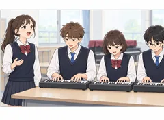
성부와 형식중2 · 문항 4~6 · 30점 · 40분K-DOT 3 · 4 · 5[4~6] 자료 4~6을 읽고 물음에 답하시오. 자료의 구체적인 표현을 근거로 자신의 판단과 활동 계획을 서술하시오. 제시된 연주·모둠 상황은 출제를 위해 새로 만든 사례이며, 실제 음원을 듣지 않아도 답할 수 있다.
자료 4 · 같은 인원으로 만드는 서로 다른 성부조직
[성부조직 살펴보기]
음악에서 성부조직은 여러 소리가 어떤 역할과 관계를 맺는지를 살피는 것이다. 호모포니(화성음악)는 중심 선율을 다른 성부가 화성 반주로 받치는 관계가 두드러진다. 폴리포니(다성음악)는 둘 이상의 선율이 각자의 흐름을 유지하면서 함께 진행하는 관계가 두드러지며, 모방을 통해 선율이 겹치기도 한다.
[같은 네 명, 다른 연주 — 출제자가 만든 사례]
가 모둠 한 사람은 중심 선율을 노래한다. 나머지 세 사람은 건반으로 화음을 나누어 연주하며 그 선율을 받친다. 건반 성부는 별개의 중심 선율을 내세우기보다 노래의 흐름을 뒷받침한다.
나 모둠 두 사람씩 나누어 두 선율을 연주한다. 뒤의 선율은 앞의 선율을 두 박 늦게 모방하여 들어온다. 앞선 선율이 끝나기 전부터 두 선율이 겹쳐 흐르며, 각 선율은 자기 진행을 이어 간다. 네 사람은 같은 박의 흐름을 유지한다.
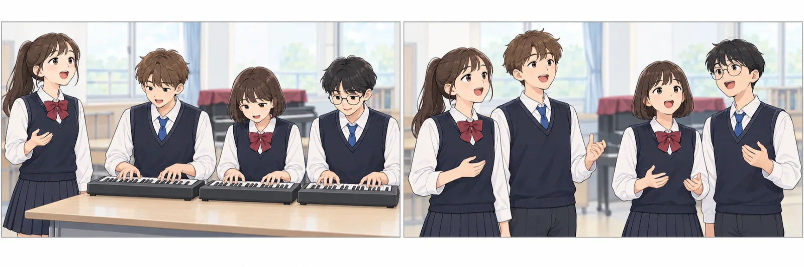
출처: 성부조직 진단 문항의 비교 방식을 바탕으로 재구성 · 모둠 연주는 가상 사례
문항 4성부 사이의 관계 분석과 비교K-DOT 3 · 해석·관계 분석8점
자료 4의 가·나 모둠 연주를 호모포니와 폴리포니로 구분하고, 각 판단의 근거를 자료에서 찾아 설명하시오. 두 모둠 모두 네 명이 연주하는데도 성부조직이 달라지는 이유를, 연주자 수와 성부 사이의 역할·관계를 구분하여 비교하시오.
자료 5 · 되돌아오는 주제와 대비되는 부분
[형식 살펴보기]
론도형식에서는 중심 주제가 서로 다른 대조 부분 사이에 다시 나타난다. 되돌아오는 주제를 리프레인, 그 사이에서 다른 내용을 들려주는 부분을 에피소드라고 한다. 이 자료에서는 선율과 리듬이 같은지를 중심으로 주제의 반복 여부를 판단한다.
[20마디 음악의 구성 — 출제자가 만든 사례]
한 학생은 ‘처음의 A가 세 번 나오므로 전체 형식은 A-A-A이다. B와 C는 단순한 연결 부분일 뿐이다’라고 말했다.
출처: 론도·리프레인·에피소드 문항을 바탕으로 재구성 · 마디 구성과 학생 발언은 가상 사례
문항 5반복·대비를 근거로 한 형식 분석K-DOT 4 · 판단·정당화10점
자료 5에서 한 학생이 한 말에 동의하는지 자신의 생각을 서술하시오. 전체의 구간 배열과 형식 이름을 밝히고, 마디 번호와 선율·리듬의 특징을 근거로 리프레인과 에피소드의 역할을 설명하시오.
자료 6 · 감상과 능동적인 음악 실현
[음악을 배우는 두 관점]
㉠ 음악의 표현적 특징을 주의 깊게 듣고, 음악 요소에서 근거를 찾아 자신의 느낌과 판단을 설명하는 경험을 중시한다.
㉡ 음악을 배우는 사람이 감상 결과를 받아들이는 데 그치지 않고, 직접 음악을 연주하고 선택하며 수정하는 과정에 능동적으로 참여하는 것을 중시한다.
※ 두 관점은 음악교육 이론의 일부 논점을 학생 활동 수준으로 풀어 쓴 것이다. ㉠이 연주를 배제하거나 ㉡이 감상을 배제한다는 뜻은 아니다.
[네 사람의 모둠 연습 상황]
모둠은 자료 5의 20마디 음악을 목소리와 건반 등으로 연주하여 첫 녹음을 만들었다. A에서는 반주가 너무 커서 중심 선율이 묻혔고, B에서는 두 선율이 들어오고 겹치는 지점이 분명하지 않았다. A가 다시 돌아오는 느낌과 B·C의 리듬 차이도 충분히 드러나지 않았다.
녹음을 들은 뒤 학생들은 ‘좋다’, ‘별로다’라는 말만 했고, 두 사람만 연습 방법을 결정했다. 나머지 두 사람은 소리를 듣거나 표현할 기회가 적었다. 모둠은 첫 녹음과 다시 연습한 녹음을 비교하여 무엇이 달라졌는지 확인하려 한다.
출처: 두 음악교육 관점을 바탕으로 재구성 · 모둠 상황은 가상 사례
문항 6감상과 표현을 연결한 공동 활동 설계K-DOT 5 · 문제 해결·종합12점
자료 6의 두 관점을 연결하여, 네 사람이 자료 5의 음악을 함께 감상하고 연주할 활동 계획을 세우시오. 자료 4의 성부 관계와 자료 5의 반복·대비가 연주에서 잘 드러나도록 아래 조건을 모두 포함하고, 각 활동을 하는 이유를 설명하시오.
| 문항 | 급간 | 수행 특성 |
|---|---|---|
| 문항 4성부 관계 분석·비교 | 8 | 가를 호모포니, 나를 폴리포니로 옳게 구분하고 중심 선율·화성 반주 및 모방하며 겹쳐 흐르는 두 선율을 각각 근거로 설명함. 연주자 수가 아니라 성부 사이의 역할과 관계가 구분 기준임을 비교하여 밝힘. |
| 6 | 가를 호모포니, 나를 폴리포니로 구분하고 각 성부 관계의 근거를 옳게 설명했으나, 같은 네 명의 연주라도 조직이 다른 이유를 인원수와 성부 역할을 구분하여 비교하는 설명이 부족함. | |
| 4 | 가·나의 조직을 옳게 구분했으나 두 근거 설명이 부족함. 또는 한 모둠의 조직과 타당한 근거만 설명함. | |
| 0 | 무응답이거나, 두 조직의 올바른 구분 또는 한 조직의 구분과 타당한 근거라는 4점의 최소 요건에 미치지 못함. | |
| 문항 5형식 분석·주장 판단 | 10 | A-B-A-C-A의 론도형식을 밝히고, 마디와 선율·리듬의 근거로 리프레인 A 및 에피소드 B·C를 설명하여 학생의 주장을 반박함. 악기가 바뀌어도 A의 동일성이 유지되는 이유와 반복·대비의 기능을 모두 논리적으로 설명함. |
| 8 | A-B-A-C-A와 론도형식을 옳게 밝히고, 구간 근거로 리프레인·에피소드를 구분하여 학생의 주장을 판단함. 다만 악기 변화와 주제의 동일성을 구분하거나 반복·대비의 기능을 설명하는 데 일부 부족함. | |
| 5 | A-B-A-C-A 배열 또는 반복·대비의 근거 중 일부를 옳게 설명했으나, 리프레인·에피소드의 구분과 자료에 근거한 주장 판단을 함께 갖추지 못하여 8점 수준에 미치지 못함. | |
| 0 | 무응답이거나, 구간 배열·반복·대비에 대한 타당한 설명 없이 악기 변화나 등장 횟수만으로 잘못 판단하여 5점 수준에 미치지 못함. | |
| 문항 6공동 활동 설계 | 12 | 두 관점을 감상과 직접 표현에 연결하고, 자료 4·5의 성부 및 형식 특징에 맞는 목표·활동 순서·네 사람의 참여 역할과 이유를 구체화함. 같은 조건의 전후 녹음을 성부 관계와 반복·대비에 관한 두 지표로 비교하고 수정할 방법까지 제시함. |
| 9 | 관점 ㉠·㉡을 연결하고 성부·형식의 특징을 반영하여 실행 가능한 순서와 네 사람의 참여 역할을 제시했으나, 활동 이유 또는 같은 조건에서의 연습 전후 확인 지표·방법 중 일부가 부족함. | |
| 6 | 감상 또는 표현에서 적어도 한 가지 구체적이고 타당한 활동을 제시했으나, 두 관점의 연결·성부와 형식의 활용·활동 순서·네 사람의 참여 중 일부를 갖추지 못하여 9점 수준에 미치지 못함. | |
| 0 | 무응답이거나, 노력·선호·기대만 제시하여 구체적이고 타당한 감상 또는 표현 활동을 확인할 수 없음. |
문항 4 · 8점 예시
가 모둠의 연주는 호모포니이고 나 모둠의 연주는 폴리포니이다. 가에서는 한 사람이 부르는 선율이 중심이 되며, 나머지 세 사람은 건반으로 화음을 연주하여 그 선율을 받친다. 따라서 성부 사이에 중심 선율과 화성 반주의 역할 구분이 있다.
나에서는 두 사람씩 나누어 연주하는 두 선율이 두 박의 시간차를 두고 시작한다. 앞 선율이 계속되는 동안 뒤 선율도 자기 진행을 이어 가므로, 독립된 선율이 모방을 통해 겹쳐 흐른다는 점이 폴리포니의 근거이다. 공통된 박을 지키더라도 각 선율이 맡는 흐름은 서로 구분된다.
두 모둠이 모두 네 명이라는 사실은 조직을 결정하지 않는다. 핵심은 소리를 내는 사람의 수가 아니라, 한 선율을 다른 성부가 받치는지 아니면 여러 선율이 각각의 흐름을 유지하며 어우러지는지에 있다. 그러므로 인원수가 같아도 성부 사이의 관계에 따라 서로 다른 조직이 나타날 수 있다.
가 모둠은 호모포니이다. 한 사람의 노래가 중심 선율이고 건반 소리는 화성 반주로 그 선율을 받쳐 주기 때문이다. 나 모둠은 폴리포니이다. 두 성부의 선율이 두 박의 시간차를 두고 들어온 뒤 서로 겹치며, 앞선 선율이 끝나기 전에도 뒤의 선율이 자기 흐름을 이어 가기 때문이다. 나에서는 단순히 같은 리듬의 화음만 받치는 것이 아니라 두 선율의 움직임이 함께 들린다.
두 조직과 각 근거는 옳지만, ‘둘 다 네 명’이라는 조건에도 조직이 다른 이유를 인원수와 성부 역할의 차이로 명시하여 비교하지 않았다.
가 모둠의 연주는 호모포니이다. 한 사람이 부르는 중심 선율이 있고 나머지 세 사람의 건반 소리는 그 선율을 화성으로 받쳐 주기 때문이다. 즉, 노래와 건반이 똑같은 역할을 하는 것이 아니라 중심 선율과 반주라는 역할로 나뉜다.
가의 조직과 근거는 구체적이지만, 나의 폴리포니와 그 근거 및 두 모둠의 비교를 작성하지 않았다. 한 조직의 구분과 근거를 충족한 4점 예이다.
두 모둠 모두 네 명이 함께 연주하므로 폴리포니이다. 여러 악기가 동시에 소리를 내는 연주는 모두 폴리포니이며, 가와 나는 성부의 조직이 같다.
연주자·악기의 수를 성부 관계와 혼동한 의도적 오답이다. 두 조직의 올바른 구분이나 한 조직의 타당한 근거를 제시하지 못해 0점이다.
문항 5 · 10점 예시
나는 ‘A-A-A이고 B와 C는 연결 부분일 뿐’이라는 주장에 동의하지 않는다. 전체 20마디를 선율과 리듬의 동일성에 따라 구분하면 A-B-A-C-A이다. 1~4마디의 A가 9~12마디와 17~20마디에 다시 나오므로, 되돌아오는 중심 주제인 리프레인에 해당한다.
반면 5~8마디 B는 새로운 선율과 A보다 잘게 나뉜 리듬을 지니고, 13~16마디 C는 A·B와 다른 선율과 짧고 끊는 리듬을 지닌다. 두 부분은 각각 네 마디의 독립된 대조 부분이므로 에피소드이며, 단순한 연결로 지워 버릴 수 없다. 이처럼 중심 주제가 대조 부분 사이에서 반복되므로 론도형식으로 판단한다.
A를 연주하는 악기가 바뀌면 음색은 달라지지만, 자료에서 선율과 리듬은 그대로라고 하였으므로 새로운 주제가 된 것은 아니다. A의 귀환은 곡을 하나로 묶어 주고, 서로 다른 B와 C는 변화를 만들어 반복만 이어질 때와 다른 흐름을 준다. 따라서 악기 수나 등장 횟수만 세기보다 반복되는 내용과 대비되는 내용을 함께 살펴야 한다.
그 학생의 말에 동의하지 않는다. 1~4마디를 A로 표시하면 5~8마디는 새로운 선율과 다른 리듬이 나오는 B이고, 9~12마디에서는 처음의 선율·리듬 A가 돌아온다. 13~16마디는 A나 B와 다른 선율을 짧게 끊어 연주하는 C이며, 17~20마디에서 A가 다시 나온다. 따라서 배열은 A-B-A-C-A이고 론도형식이다. 세 번 돌아오는 A는 리프레인이고, B와 C는 각각 새로운 선율과 리듬으로 A와 대비하는 에피소드이다. 네 마디씩 독립된 내용을 지니므로 이를 빼고 A-A-A라고 하는 것은 전체의 구성을 설명하지 못한다.
배열·구간 근거·주장 판단은 타당하나, A에서 악기가 바뀌어도 같은 주제로 보는 이유와 반복·대비가 만드는 기능을 충분히 설명하지 않았다.
이 곡의 배열은 A-B-A-C-A이다. 처음 1~4마디의 선율과 리듬이 9~12마디와 17~20마디에서 다시 나타나므로 세 부분을 모두 A라고 표시한다. 처음 들었던 주제를 중간과 끝에서 다시 만날 수 있다는 점이 특징이다.
배열과 A의 반복 근거는 옳다. 그러나 B·C가 독립된 대조 부분이라는 설명, 학생 주장에 대한 판단, 악기 변화와 형식의 구분 및 반복·대비의 기능이 빠져 5점이다.
악기가 다섯 번 바뀌므로 이 곡은 A-B-C-D-E이다. 같은 선율이 다시 나와도 악기가 다르면 다른 곡으로 보아야 하며, B와 C는 아무 역할이 없는 연결 부분이다.
선율·리듬이 같은 A의 재등장을 인정하지 않고 악기만으로 형식을 판단한 의도적 오답이다. 배열·반복·대비에 타당한 설명이 없어 0점이다.
문항 6 · 12점 예시
목표는 A의 주선율과 반주, B의 겹치는 선율을 구분해 표현하고, A의 귀환과 B·C의 대비가 청중에게 들리도록 하는 것이다.
먼저 첫 녹음을 들으며 네 명이 각각 1~4·9~12·17~20마디의 A와 5~8마디 B, 13~16마디 C를 표시한다. ‘신난다’는 느낌만 말하지 않고, 어느 부분의 리듬·셈여림·성부 관계가 그런 느낌을 만드는지 한 가지씩 설명한다. 이는 음악의 표현적 특징을 듣고 근거를 들어 판단하는 관점 ㉠을 활동으로 옮긴 것이다.
다음에는 두 명이 연주하고 두 명이 듣는 역할을 교대한다. A에서는 주선율과 건반 반주의 세기를 조절하고, B에서는 두 선율의 진입 지점과 겹치는 구간을 맞춘다. C에서는 짧고 끊는 리듬의 차이를 살린다. 감상자는 소리가 묻힌 마디와 잘 드러난 대비를 기록하고 연주자가 수정할 방법을 제안한다. 역할을 바꾼 뒤 네 명이 처음부터 끝까지 합주한다. 전원이 소리를 내고 선택하며 수정하므로 관점 ㉡의 능동적인 음악 실현을 반영한다.
마지막으로 처음과 같은 빠르기·악기·녹음 위치에서 같은 20마디를 녹음한다. 성부 지표는 A의 주선율과 B의 두 선율이 각각 구별되는지, 형식 지표는 A의 세 번의 귀환과 B·C의 대비를 구간 근거와 함께 알아볼 수 있는지로 정한다. 전후 녹음을 비교해 개선된 마디와 여전히 어려운 마디를 적고, 반주 세기나 진입 시점을 한 번 더 수정한다. 같은 조건을 유지해야 활동의 효과를 더 분명하게 비교할 수 있다.
우리 모둠은 A의 주선율이 선명하고 B·C의 차이가 들리는 연주를 목표로 삼겠다. 먼저 A가 돌아오는 구간과 B·C의 리듬 차이를 듣고, ‘좋다’라는 말 대신 어느 마디의 어떤 소리 때문에 그렇게 느꼈는지 말하겠다. 이는 음악 요소의 표현을 듣고 판단하는 관점 ㉠을 반영한다. 다음으로 네 사람을 두 명씩 나누어 연주자와 감상자 역할을 번갈아 맡긴다. A에서는 선율과 반주가, B에서는 겹치는 두 선율이 모두 들리는지 듣고 서로 조언한다. 그 조언에 따라 음량과 들어오는 시점을 고친 뒤 네 명이 20마디를 함께 연주하고 녹음한다. 직접 소리를 내고 선택·수정하는 과정은 관점 ㉡을 반영하며, 역할을 바꾸면 모든 학생이 듣기와 표현에 참여할 수 있다.
두 관점·자료 활용·순서·참여와 이유는 있으나 연습 전후를 같은 조건에서 비교할 지표와 방법을 제시하지 않았다.
A 부분에서는 주선율이 잘 들리도록 노래하는 사람의 소리를 기준으로 건반 반주의 세기를 낮추겠다. B 부분에서는 두 선율이 겹치는 지점만 짧게 나누어 연습하고, 각자 다른 선율을 따라가지 않도록 자기 선율을 유지하겠다. C 부분의 짧고 끊는 리듬은 천천히 맞춘 다음 원래 빠르기로 이어서 연주하겠다. 이렇게 하면 각 부분의 성부 역할과 차이를 표현하는 데 도움이 된다.
성부·형식 특징을 반영한 구체적인 연습은 있으나, 근거를 들어 듣고 판단하는 활동·네 사람의 역할 교대·전후 확인 계획을 갖추지 못하였다.
네 사람이 음악을 좋아하는 마음으로 열심히 연습하고 서로 친하게 지내면 좋은 결과가 나올 것이다. 음악을 많이 들으면 연주도 자연스럽게 잘하게 될 것이므로 꾸준히 노력하겠다.
노력과 기대만 있고, 무엇을 듣고 어떻게 표현·분담·확인할지 제시하지 않은 0점 응답 예이다. 무응답도 이 급간에 해당한다.
재구성 원칙: 원문의 선택지는 정답 해설이 아니므로 모든 진술을 사실로 옮기지 않았다. 연주 상황, 마디 구분, 학생 발언, 활동 조건, 배점과 답안은 이번 평가를 위해 새로 구성했다. 자료 6은 두 관점의 일부를 학생 활동 수준으로 풀어 쓴 것으로, 두 이론 전체가 같다는 뜻은 아니다. 이 세트는 자료 해석과 활동 계획을 평가하며, 실제 청음·연주 능력을 직접 측정한 결과로 해석하지 않는다.
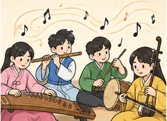
한국음악·국악중2 · 문항 7~9 · 30점 · 40분K-DOT 3 · 4 · 5[7~9] 자료 7~9를 읽고 물음에 답하시오. 자료의 구체적인 표현을 근거로 한국음악의 특징과 전승 방식을 설명하고, 자신의 판단과 활동 계획을 서술하시오. 제시된 수업·현장 상황은 출제를 위해 재구성한 사례이며 실제 현장 방문이나 음원 청취 없이도 답할 수 있다.
자료 7 · 시대에 따라 달라진 우리 음악의 기록과 제도
한국음악의 흐름과 관련하여 다음 내용을 정리하였다.
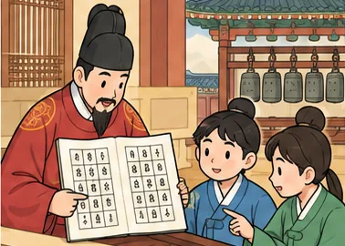
출처: 한국음악사 관련 문항을 바탕으로 재구성
문항 7한국음악사의 흐름과 기록 방식의 변화K-DOT 3 · 해석·관계 분석8점
자료 7의 내용을 시대 순서에 맞게 정리하고, 조선 전기에 새롭게 나타난 기보법·악서·제례악 관련 변화 중 두 가지 이상을 골라 각각 어떤 역할을 했는지 자료의 표현을 바탕으로 설명하시오.
자료 8 · 시나위에서 나타나는 성부의 관계
음악 분석에서는 헤테로포니를 ‘유사한 중심음을 사용하면서 각 성부가 서로 다른 장식음을 사용하는 성부 조직’으로 설명하고, 국악의 시나위를 대표적인 사례로 든다.
[수업 상황]
세 학생이 시나위의 한 대목을 연주한다. 세 사람은 비슷한 중심 선율의 흐름을 공유하지만, 각자 장식음을 넣는 위치와 길이가 조금씩 달라 같은 순간에도 소리의 움직임이 완전히 같지는 않다. 교사는 학생들에게 ‘누가 틀렸는지’를 찾기보다, 같은 흐름과 다른 장식이 동시에 들리는 이유를 말해 보게 한다.
출처: 성부조직 진단 문항의 시나위·헤테로포니 내용을 바탕으로 수업 상황으로 재구성
문항 8시나위의 성부 관계를 근거로 설명하기K-DOT 4 · 판단·정당화10점
자료 8의 연주가 어떤 성부 관계를 보여 주는지 자료의 용어를 사용하여 설명하시오. 세 사람의 연주에서 공통적으로 들리는 요소와 서로 다르게 들리는 요소를 각각 밝히고, 학생들이 이 특징을 실제 합주에서 확인할 수 있는 연습 방법을 한 가지 제안하시오.
자료 9 · 전통음악을 현장에서 배우고 전승하기
예악사상은 음악의 사회적 역할을 중시하며, 전통음악의 특성을 이해하는 데 도움을 줄 수 있다. 또 ‘한국 전통음악 선율구조’ 수업에서 현장 연구를 실시하여 인간문화재의 집을 방문하고, 음악을 녹음하여 채음한 뒤 악보로 채보하는 활동 사례도 있다.
[가상 수업 상황]
중학교 2학년 학생 네 명이 지역의 전통음악 전승 현장을 방문한다. 학생들은 연주를 듣고 녹음 자료를 남긴 뒤, 들은 선율의 특징을 글과 간단한 기호로 정리하고, 연주자에게 음악이 지역 공동체에서 어떤 역할을 해 왔는지 질문하려 한다.
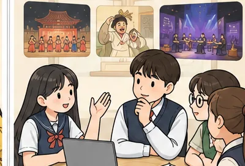
출처: 예악사상과 한국 전통음악 현장 연구 관련 내용을 바탕으로 재구성
문항 9전통음악의 전승을 이해하는 현장 학습 설계K-DOT 5 · 문제 해결·종합12점
자료 9를 바탕으로 네 학생이 전통음악을 ‘듣기→기록하기→질문하기→공유하기’의 과정으로 배우는 현장 학습 계획을 세우시오. 각 단계에서 할 활동을 구체적으로 쓰고, 그 활동이 전통음악의 특징과 사회적 역할을 이해하거나 전승하는 데 어떤 도움을 주는지 설명하시오.
| 문항 | 급간 | 수행 특성 |
|---|---|---|
| 문항 7한국음악사 흐름·기록 | 8 | 통일신라→고려→조선 전기의 흐름을 정확히 정리하고, 조선 전기의 기보법·악서·제례악 관련 요소를 두 가지 이상 골라 자료의 표현과 연결해 ‘기록·정리·전승’의 의미까지 설명한다. |
| 6 | 시대 흐름과 두 가지 이상의 요소는 옳게 제시하지만, 각 요소의 역할이나 기록·전승의 의미를 설명하는 부분이 일부 부족하다. | |
| 4 | 시대 흐름의 일부와 한 가지 요소의 의미를 옳게 설명하거나, 두 가지 이상을 나열했으나 역할 설명이 충분하지 않다. | |
| 0 | 무응답이거나 시대와 요소의 관계를 거의 파악하지 못하여 자료에 근거한 설명을 확인하기 어렵다. | |
| 문항 8시나위 성부 관계 | 10 | 시나위 사례를 자료의 용어로 설명하고, 유사한 중심 선율과 서로 다른 장식음을 각각 근거로 제시한다. 두 특징을 실제 합주에서 확인할 수 있는 구체적 연습 방법까지 연결한다. |
| 8 | 중심 선율과 장식음의 관계를 옳게 설명하고 성부 관계를 파악했으나, 연습 방법이 다소 일반적이거나 두 특징 중 하나를 확인하는 방법이 부족하다. | |
| 5 | 공통된 흐름 또는 서로 다른 장식 중 한 특징을 중심으로 부분적으로 설명하지만, 두 특징의 관계나 연습 방법이 충분하지 않다. | |
| 0 | 세 성부가 완전히 같은 선율을 똑같이 연주한다고 단정하는 등 자료의 핵심 관계를 설명하지 못하거나 무응답이다. | |
| 문항 9현장 학습·전승 설계 | 12 | 듣기→기록하기→질문하기→공유하기의 네 단계를 모두 구체적으로 제시하고, 녹음·채음·채보에 해당하는 기록 활동, 사회적 역할·전승에 관한 질문, 네 학생의 역할 분담과 결과 공유 방법을 모두 연결한다. |
| 9 | 네 단계와 역할 분담이 대부분 구체적이고 전통음악의 특징·전승과 연결되지만, 기록 방법·질문 내용·공유 방법 가운데 한 부분이 충분히 구체적이지 않다. | |
| 6 | 현장 학습에서 실행 가능한 활동을 두 가지 이상 제시하지만, 네 단계의 연결이나 사회적 역할·전승과의 관련 설명이 부족하다. | |
| 0 | 단순히 ‘가서 듣고 온다’와 같은 수준에 머물거나, 자료에 근거한 기록·질문·공유 활동을 거의 제시하지 못한다. |
문항 7 · 8점 예시
통일신라에는 범패가 유입되고, 고려에는 당악과 아악이 유입된 것으로 자료에 제시되어 있다. 조선 전기에는 음악을 기록하고 정리하는 방법이 더 구체적으로 나타난다. 세종 때의 정간보는 음악을 기록하는 기보 방식으로 제시되어 있고, 세조 때에는 오음약보가 만들어졌다. 성종 때에는 합자보와 『악학궤범』이 나타나 음악을 적고 정리하는 자료가 더해진다. 또한 보태평과 정대업이 회례악에서 종묘제례악에 사용된다는 내용은 음악이 의례 속에서 이어지는 모습을 보여 준다. 따라서 조선 전기에는 음악을 기록하는 기보법과 음악 내용을 정리하는 악서, 의례에서 음악을 이어 쓰는 제도가 함께 나타난다고 정리할 수 있다.
교사 메모 · 시대 흐름, 두 가지 이상의 자료 요소, 기록·정리·전승의 의미가 모두 연결되어 있으면 만점으로 본다. 자료 밖의 세부 연대나 인물 설명을 추가로 요구하지 않는다.
문항 8 · 10점 예시
자료의 시나위 연주는 유사한 중심 선율을 공유하면서 각 성부가 서로 다른 장식음을 사용하는 관계를 보여 준다. 세 학생 모두 같은 큰 흐름을 따라가기 때문에 서로 전혀 다른 곡을 연주하는 것은 아니다. 그러나 장식음을 넣는 위치와 길이가 달라서 같은 순간의 움직임이 완전히 같지도 않다. 합주 연습에서는 먼저 장식음을 줄이고 중심 선율의 흐름만 함께 맞춘 뒤, 두 번째 연주에서 각자 장식음을 넣어 녹음해 비교할 수 있다. 그러면 공통된 중심 흐름은 유지되는지, 각 성부의 장식은 어떻게 다르게 들리는지 함께 확인할 수 있다.
교사 메모 · ‘같은 흐름+다른 장식’의 두 축이 모두 있어야 상위 급간으로 본다. 서양 성부조직 용어를 추가로 쓰는지는 점수의 필수 조건으로 삼지 않는다.
문항 9 · 12점 예시
먼저 네 학생이 전통음악 연주를 들으면서 한 명은 전체 흐름, 한 명은 반복되는 선율, 한 명은 장식이나 소리의 변화, 한 명은 연주 상황을 기록한다. 다음에는 허락받은 녹음을 다시 들으며 들은 내용을 채음하고, 간단한 기호나 악보 형태로 채보한다. 세 번째 단계에서는 연주자에게 ‘이 음악은 지역 공동체에서 언제 연주되었는가?’, ‘누구에게 어떻게 배워 다음 세대에 전해 왔는가?’와 같이 사회적 역할과 전승을 묻는다. 마지막으로 네 학생이 역할을 바꾸어 서로의 기록을 확인하고, 녹음 일부·채보 자료·인터뷰 내용을 묶어 발표한다. 이렇게 하면 음악의 소리 자체뿐 아니라 그 음악이 사람들의 생활 속에서 어떤 의미를 가지고 이어져 왔는지 함께 이해할 수 있다.
교사 메모 · 현장 방문 자체보다 듣기·기록·질문·공유가 서로 연결되어 있는지를 본다. 실제 개인정보나 허가가 필요한 녹음은 사전 동의를 전제로 하는 수업 상황으로 채점한다.
| 문항 · 급간 | 감점 사례 |
|---|---|
| 문항 7 · 6점 | 시대 순서와 정간보·악학궤범은 제시했지만 각각의 역할을 ‘중요하다’ 정도로만 적는다. |
| 문항 7 · 4점 | 조선 전기의 기보법 이름을 두 개 나열하였으나 통일신라·고려와의 흐름을 설명하지 않는다. |
| 문항 7 · 0점 | 시대를 모두 뒤섞거나 자료와 관계없는 서양음악사만 서술한다. |
| 문항 8 · 8점 | 중심 선율과 장식음의 차이는 잘 설명하지만 ‘여러 번 연습한다’고만 하여 확인 방법이 구체적이지 않다. |
| 문항 8 · 5점 | ‘각자 다르게 연주한다’고만 쓰고 공통된 중심 흐름을 설명하지 않는다. |
| 문항 8 · 0점 | 세 사람이 완전히 같은 음과 리듬을 똑같이 연주해야 시나위가 된다고 단정한다. |
| 문항 9 · 9점 | 네 단계와 질문은 있으나 채음·채보 등 기록 활동이 구체적이지 않다. |
| 문항 9 · 6점 | 현장 방문과 인터뷰는 제시하지만 학생 역할 분담과 결과 공유 방법이 없다. |
| 문항 9 · 0점 | ‘공연을 보고 감상문을 쓴다’고만 하여 기록·질문·공유 과정과 전승의 의미가 드러나지 않는다. |
재구성 원칙: 객관식 선택지를 그대로 정답으로 간주하지 않고, 한국음악·국악과 직접 관련된 내용만 골라 서·논술형 제시 자료와 활동 상황으로 재구성했다. 가상 수업 상황·학생 활동·배점·급간·예시 답안은 평가 목적에 맞게 새로 썼다.
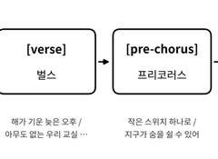
캠페인송중3 · 문항 1~3 · 10점 · 채점 요소별 분석적 채점K-DOT 2 · 2 · 3[1~3] 다음 수업에서 만든 캠페인송을 검토하기 위해 구성한 예시 자료를 읽고 물음에 답하시오.
자료 · 캠페인송 검토 자료
캠페인 주제 교실 전기 절약청중 같은 학교 또래 학생핵심 메시지 교실을 나갈 때 불을 끄자
(가) 송폼 구성
[intro] → [verse] → [pre-chorus] → [chorus] → [outro]
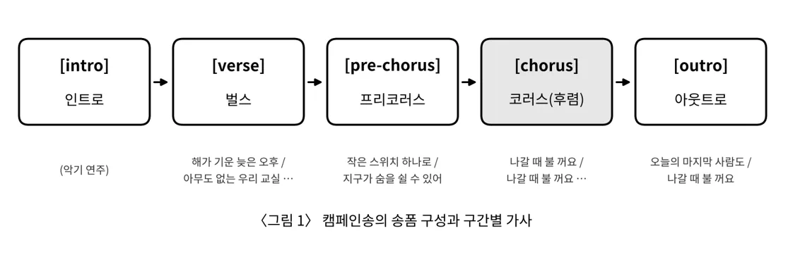
(나) 가사 초안
(다) AI 음원 후보 비교 결과
같은 가사를 AI 음악 생성 서비스에 서로 다른 조건으로 입력하여 음원 후보 A와 B를 만든 뒤, 같은 반 학생 10명에게 들려주고 ‘노래의 핵심 메시지를 한 문장으로 쓰기’에 응답하게 하였다.
| 구분 | 후보 A | 후보 B |
|---|---|---|
| 입력한 조건 | 팝, 밝고 경쾌한 분위기, 116 BPM | 발라드, 차분한 분위기, 72 BPM |
| 빠르기 | 116 BPM | 72 BPM |
| 분위기 | 밝고 경쾌함 | 차분하고 잔잔함 |
| 후렴(chorus) 반복 | 후렴 구간 2회 반복 | 후렴 구간 1회(반복 없음) |
| 핵심 메시지를 기억한 학생 수 | 10명 중 8명 | 10명 중 4명 |
출처: 수업에서 만든 캠페인송을 검토하기 위해 출제자가 구성한 예시 자료
문항 1K-DOT 2 · 이해·구분·요약3점
(가)의 송폼 구성과 (나)의 가사 초안을 바탕으로 벌스(verse)와 코러스(chorus, 후렴)의 역할을 각각 설명하고, 코러스에서 “나갈 때 불 꺼요”를 반복한 이유를 메시지 전달과 관련지어 서술하시오.
문항 2K-DOT 2 · 이해·구분·요약3점
이 노래의 캠페인 주제와 청중에 어울리는 음악적 선택 한 가지(빠르기·분위기·리듬·악기 등)를 제안하고, 그 음악 요소가 (나)의 가사와 어떻게 어울리는지와 청중의 메시지 전달에 어떤 효과를 주는지 서술하시오. (단, 후렴 반복은 제외할 것)
문항 3K-DOT 3 · 해석·비교·관계 분석4점
(다)의 후보 A와 B 중 캠페인 메시지를 또래 청중에게 전달하기에 더 적절한 후보를 선택하고, 자료의 수치와 음악적 특징을 근거로 그 이유를 설명하시오. 또한 응답자가 10명뿐이라는 점에서 결과를 해석할 때 유의할 점과, AI가 만든 후보를 학생이 검토·수정해야 하는 이유를 서술하시오.
문항 1 (3점) · 송폼과 후렴 반복의 메시지 기능 설명하기
| 채점 요소 | 1점 | 0.5점 | 0점 |
|---|---|---|---|
| 벌스의 기능 설명하기 | 벌스가 상황이나 이유를 펼치는 부분임을 캠페인 가사와 연결하여 설명함. | 벌스의 기능을 부분적으로 설명하거나 가사와 연결하지 않고 설명함. | 벌스의 기능을 설명하지 않거나 잘못 설명함. |
| 코러스(후렴)의 기능 설명하기 | 코러스가 핵심 메시지나 실천 행동을 강조하는 부분임을 설명함. | 코러스의 핵심 메시지만 언급하고 강조 기능은 설명하지 않음. | 코러스의 기능을 설명하지 않거나 잘못 설명함. |
| 후렴 반복의 효과 설명하기 | “나갈 때 불 꺼요”의 반복이 행동 메시지를 강조하거나 기억하게 하는 효과를 설명함. | 가사가 반복된다는 사실만 언급함. | 반복의 효과를 설명하지 않음. |
문항 2 (3점) · 가사·음악 요소와 메시지 전달의 관계 설명하기
| 채점 요소 | 1점 | 0.5점 | 0점 |
|---|---|---|---|
| 주제에 맞는 음악 요소 제안하기 | 빠르기·분위기·리듬·악기 등(후렴 반복 제외) 가운데 캠페인 주제와 청중에 어울리는 요소를 구체적으로 제안함. | 음악 요소의 이름만 제시함. | 타당한 음악 요소를 제안하지 않거나 후렴 반복만 제시함. |
| 가사와 음악 요소의 관계 설명하기 | 제안한 음악 요소가 “나갈 때 불 꺼요” 등 (나)의 가사와 어떻게 어울리는지 설명함. | 음악 요소와 가사를 함께 언급하나 둘의 관계가 불분명함. | 음악 요소와 가사의 연결을 설명하지 않음. |
| 청중에게 미치는 효과 설명하기 | 선택한 요소가 메시지 이해·기억·따라 부르기·참여 중 한 가지 이상에 미치는 효과를 구체적으로 설명함. | 청중에게 미치는 효과를 막연하게 언급함. | 청중에게 미치는 효과를 설명하지 않음. |
문항 3 (4점) · 음원 후보 자료를 비교·분석하여 근거 있게 선택하기
| 채점 요소 | 1점 | 0.5점 | 0점 |
|---|---|---|---|
| 목적에 적합한 후보 선택하기 | 또래 청중과 캠페인 목적에 맞는 후보를 선택하고 자료에 근거하여 이유를 제시함. (A 선택을 기본 타당 답으로 하되, B를 선택해도 자료에 근거한 일관된 설명이면 인정함.) | 후보를 선택하였으나 선택 근거가 막연함. | 후보를 선택하지 않음. |
| 두 후보의 자료 비교하기 | 빠르기·분위기·후렴 반복·기억한 학생 수 가운데 두 가지 이상을 들어 A와 B를 비교함. | 한 가지 자료만 활용하여 A와 B를 비교함. | 비교 근거를 제시하지 않음. |
| 음악 특징과 기억 결과의 관계 분석하기 | A의 밝고 경쾌한 분위기·후렴 2회 반복·8명 기억 결과와 B의 차분한 분위기·반복 없음·4명 기억 결과를 연결하여 경향을 설명함. | 음악 특징과 기억 결과의 관계를 부분적으로 설명함. | 음악 특징과 기억 결과를 연결하지 않고 단순한 선호만 제시함. |
| 자료의 한계와 AI 결과 검토 필요성 설명하기 | 10명 응답만으로 전체 청중에게 일반화하기 어렵다는 점과, AI 후보를 의도·표현에 비추어 학생이 검토·수정해야 하는 이유를 모두 설명함. | 자료의 한계와 AI 결과 검토 필요성 가운데 한 가지만 설명함. | 자료의 한계와 AI 결과 검토 필요성을 모두 설명하지 않음. |
문항 1 · 3점
벌스는 늦은 오후 아무도 없는 교실에 불빛만 남아 있는 상황을 보여 주어, 전기가 낭비되는 문제와 실천이 필요한 이유를 이야기처럼 펼친다.
코러스(후렴)는 “나갈 때 불 꺼요”라는 핵심 실천 행동을 직접 제시해 캠페인의 중심 메시지를 강조한다.
“나갈 때 불 꺼요”를 반복하면 전등 끄기라는 행동이 강조되고, 듣는 또래가 핵심 메시지를 쉽게 기억하고 따라 부를 수 있다.
문항 2 · 3점
또래가 함께 따라 부르기 쉽도록 보통보다 조금 빠르고 경쾌한 빠르기(약 110~120 BPM)를 선택하겠다.
“나갈 때 불 꺼요”처럼 짧고 말의 리듬이 분명한 가사를 경쾌한 빠르기에 맞추면 가사가 또렷하게 들리고, ‘지금 바로 실천하자’는 활기찬 메시지와도 잘 어울린다.
경쾌한 빠르기는 듣는 또래가 노래에 쉽게 몸을 맞추고 따라 부르게 하여 실천 메시지를 기억하고 캠페인에 참여하도록 돕는다.
문항 3 · 4점
A를 선택하겠다. 밝고 경쾌한 분위기와 반복되는 후렴이 또래에게 전기 절약 행동을 알리는 캠페인 목적에 잘 어울린다.
A는 116 BPM의 밝고 경쾌한 분위기이며 후렴 구간이 2회 반복되었고, 10명 중 8명이 핵심 메시지를 기억했다. B는 72 BPM의 차분한 분위기이고 후렴 반복이 없으며 10명 중 4명이 기억했다.
제시된 자료에서는 밝은 분위기와 후렴 반복이 있는 A에서 메시지를 기억한 학생 수가 더 많았다. 음악적 특징이 메시지 기억과 관련된 경향을 보이지만, 이 자료만으로 그 특징이 차이를 직접 일으켰다고 단정할 수는 없다.
응답자가 10명뿐이므로 결과를 전체 또래 청중에게 일반화하기 어렵다(0.5점). AI가 만든 후보도 캠페인 의도와 가사 표현에 맞는지 학생이 확인하고 필요하면 직접 고쳐야 한다(0.5점).
2022 개정 성취기준·성취수준 분석, 단원 선정, 사고력 요소 매핑
서·논술형 문항·루브릭·예시 답안, 5차시 지도 계획, 본시 과정안·활동지 개발
중1 학급 시범 적용, 2인 교차 채점, 앵커 답안 선정
수정·편집, 채점 안내서 정리, 보급 연수 지원
문항 정보표–문항–예시 답안–루브릭–채점 안내를 한 묶음으로 만들어, 교사가 단원과 음원만 바꿔 같은 틀로 문항을 만들 수 있게 한다.
앵커 답안과 채점 협의 사례를 교과협의회 연수 자료로 제공하고, 도내 음악 교사 연구회에서 함께 채점해 보는 연수를 연다.
‘소리 증거 → 주장 → 제안’ 틀은 미술 감상(색·구도 증거), 국어 매체 비평으로 옮겨 쓸 수 있도록 적용 안내를 덧붙인다.
Start · 이렇게 시작해 보세요
References교육부(2022). 음악과 교육과정(교육부 고시 제2022-33호 [별책 12]) · Anderson & Krathwohl(2001). A taxonomy for learning, teaching, and assessing · Black & Wiliam(1998). Assessment and classroom learning · Brookhart(2013). How to create and use rubrics for formative assessment and grading · Torrance(1974). Torrance tests of creative thinking · Toulmin(1958). The uses of argument
전남학교예술교육페스티벌은 교육청이 주최하고 전남중등음악사랑연구회가 주관하는 학생 공연예술 발표의 장입니다. 전남관악제에서 시작해 2019년부터 학교예술교육 성과를 나누는 축제로 이어져 왔고, 올해 열세 번째 무대가 11월 둘째 주 여수 예울마루에서 나흘 동안 열렸습니다.
Host
전남광주통합특별시교육청 주최
전남중등음악사랑연구회 주관
Field
표준·윈드·국악 오케스트라와 합창·밴드·뮤지컬·연극·무용 같은 학생예술동아리
Since
전남관악제를 전신으로, 2019년부터 학교예술교육 성과를 확산하는 사업으로 명맥을 이어 왔다.
 201910. 28.~11. 1.예울마루 대극장·소극장
201910. 28.~11. 1.예울마루 대극장·소극장 202111. 1.~11. 5.예울마루 대극장·소극장
202111. 1.~11. 5.예울마루 대극장·소극장 202210. 25.~10. 28.목포시민문화체육센터
202210. 25.~10. 28.목포시민문화체육센터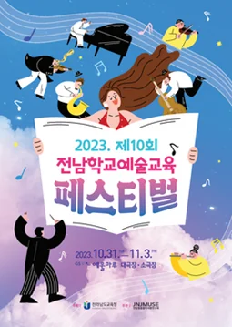
2023제10회10. 31.~11. 3.예울마루 대극장·소극장 2024제11회10. 29.~11. 1.예울마루 대극장·소극장
2024제11회10. 29.~11. 1.예울마루 대극장·소극장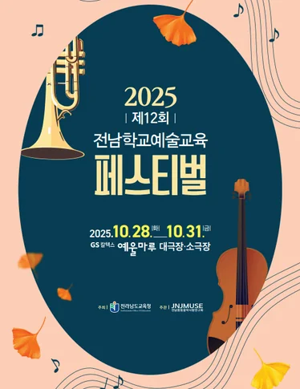
2025제12회10. 28.~10. 31.예울마루 대극장·소극장 2026제13회11. 10.~11. 13.예울마루 대극장·소극장
2026제13회11. 10.~11. 13.예울마루 대극장·소극장연도별 포스터 · 출처: 2026 오케스트라 운영학교 담당자 협의회 자료 · 2020년 포스터는 자료에 없음
Background · 추진 배경
다양한 능력을 갖춘 미래 인재를 기른다
다른 학교 공연을 보며 스스로 동기를 얻는다
연주 활동에 대한 자신감과 성취감을 높인다
학교예술교육의 성과를 발표할 기회를 준다
GS칼텍스 예울마루 대극장
하루 흐름 · 09:10 리허설 → 13:30 본 공연 1부 → 15:00 인터미션 → 2부 · 팀당 10분 이내(뮤지컬·연극 20분)
초중 연합 2 · 기관(진도교육지원청 학생합창단) 1
10 여수 7 순천 4 나주 4 화순 3 목포 2 담양·신안·완도·영암·함평·진도 1 해남·고흥·장성·장흥·강진·영광·광양·무안
신청 영상에서 음원만 뽑아 학교명 없이 분야 전문가가 심사한다(복합장르는 영상 원본). 선정 팀의 30%는 지난 3년 동안 선정되지 못했던 팀에게 먼저 기회를 준다.
공연팀은 다른 학교 공연을 3개교 이상 반드시 관람한다. 무대에 서는 날과 객석에 앉는 날이 함께 있는 축제다.
연구회 회원 교사를 중심으로 21명의 운영위원이 무대 입·퇴장, 티켓, 대기실, 사회를 나누어 맡는다.

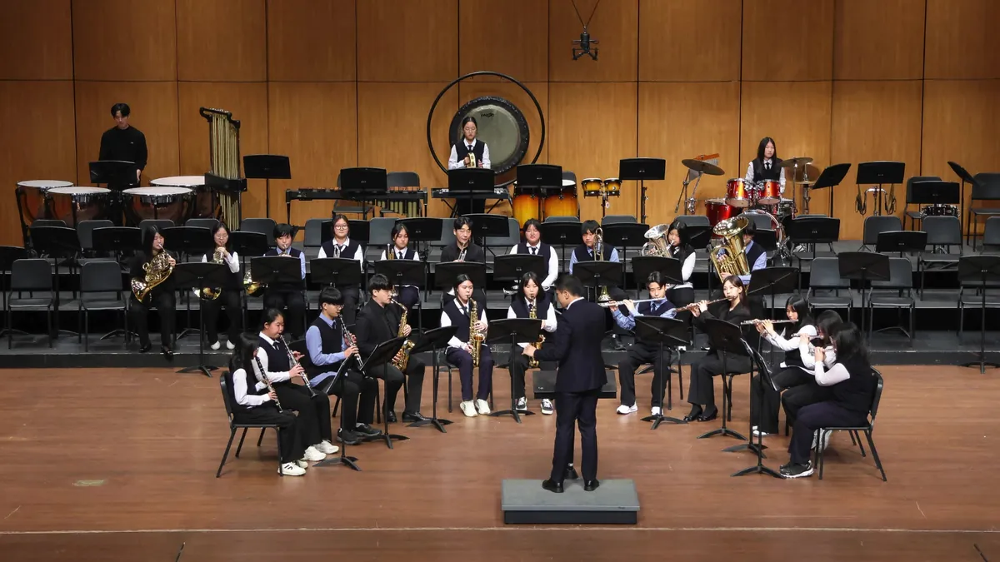
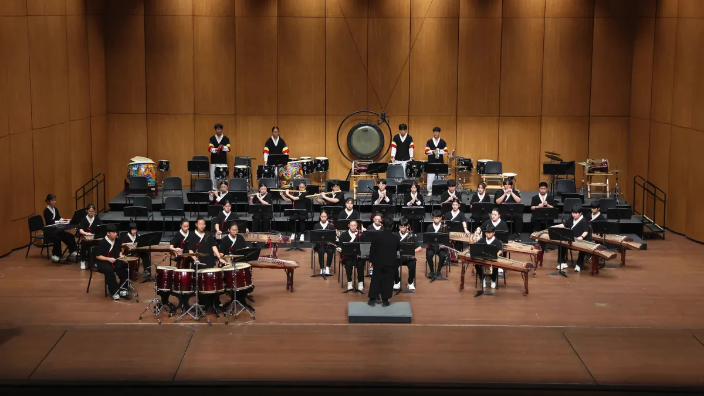
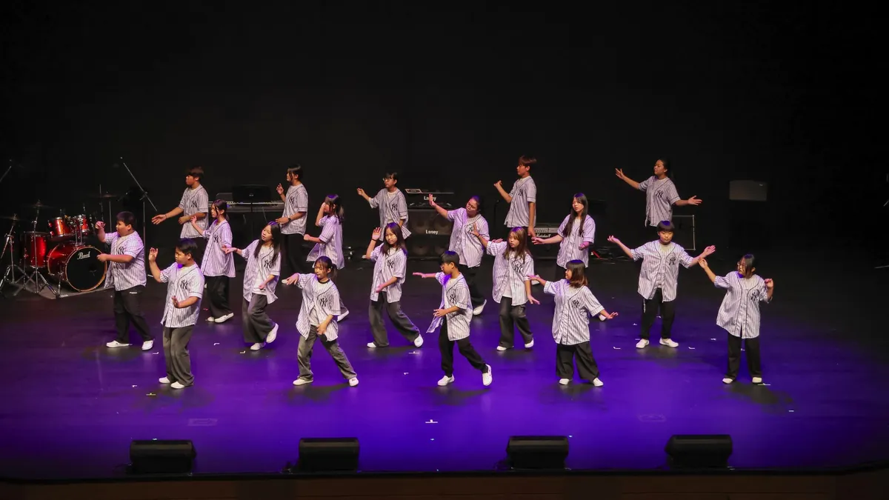
2025 제12회 하이라이트 영상 장면 · 예울마루 대극장·소극장 · 출처: 2026 오케스트라 운영학교 담당자 협의회 자료

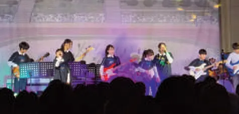
2026 제13회 참가 팀 공연 사진 · 출처: 제13회 팜플릿
「예술로 함께 여는
제13회 팜플릿 인사말 표제
교육의 새로운 표준」
추진 계획 공문을 받아 일정과 분야를 확인한다.
운영위원회가 분야별로 분류하고, 분야 전문가가 학교명 없이 음원만 듣고 심사한다. 운영위원회 심의를 거쳐 최종 선정한다.
오전 리허설, 오후 1시 30분부터 본 공연. 다른 학교 공연 3개교 이상 관람.
| 구분 | 비율 | 선정 방법 |
|---|---|---|
| 1그룹 | 70% | 심사 결과 100% — 동영상 심사 고득점 순 |
| 2그룹 | 30% | 우선순위 적용(2023~2025 신청 기준) — 1순위 2회 이상 미선정, 2순위 1회 미선정, 3순위 미신청 팀. 같은 순위는 심사 고득점 순 |
| 공통 | — | 신청 팀은 다른 학교 공연 3개교 이상 관람에 동의해야 한다 |
About / 연구회 소개
09 / Sketch · 현장 스케치
12월 5일 이후, 현장 사진과 참여 선생님들의 목소리를 이 자리에 더합니다.